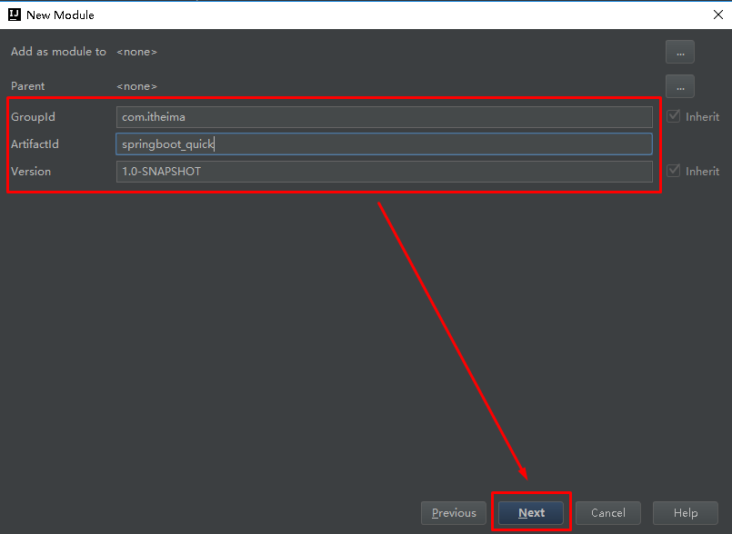
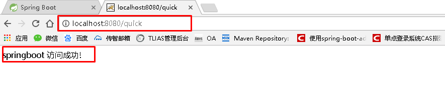
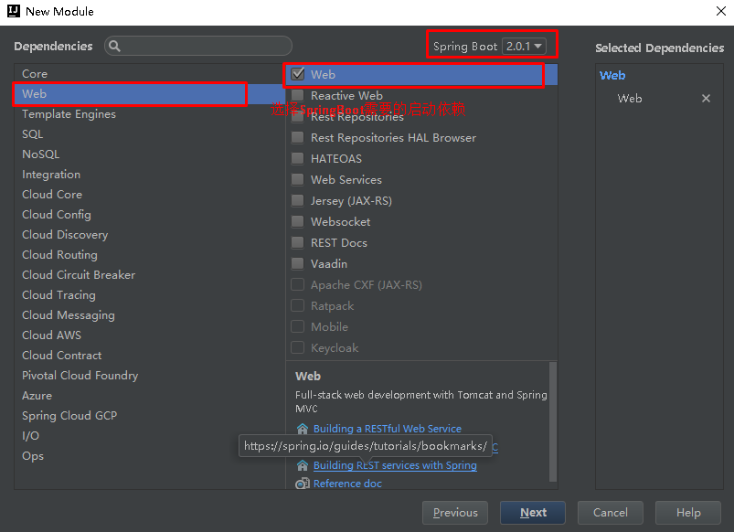

<!DOCTYPE html>


<html lang="en">


<head>
  <meta charset="utf-8" />
    
  <meta name="viewport" content="width=device-width, initial-scale=1, maximum-scale=1" />
  <title>
    SpringBoot |  Yami
  </title>
  <meta name="generator" content="hexo-theme-ayer">
  
  <link rel="shortcut icon" href="/favicon.ico" />
  
  
<link rel="stylesheet" href="/dist/main.css">

  
<link rel="stylesheet" href="https://cdn.jsdelivr.net/gh/Shen-Yu/cdn/css/remixicon.min.css">

  
<link rel="stylesheet" href="/css/custom.css">

  
  
<script src="https://cdn.jsdelivr.net/npm/pace-js@1.0.2/pace.min.js"></script>

  
  

  

<link rel="alternate" href="/atom.xml" title="Yami" type="application/atom+xml">
</head>

</html>

<body>
  <div id="app">
    <main class="content on">
      <section class="outer">
  <article id="post-SpringBoot" class="article article-type-post" itemscope
  itemprop="blogPost" data-scroll-reveal>

  <div class="article-inner">
    
    <header class="article-header">
       
<h1 class="article-title sea-center" style="border-left:0" itemprop="name">
  SpringBoot
</h1>
 

    </header>
    

    
    <div class="article-meta">
      <a href="/2020/04/20/SpringBoot/" class="article-date">
  <time datetime="2020-04-20T13:03:42.000Z" itemprop="datePublished">2020-04-20</time>
</a>
      
      
      
<div class="word_count">
    <span class="post-time">
        <span class="post-meta-item-icon">
            <i class="ri-quill-pen-line"></i>
            <span class="post-meta-item-text"> Word count:</span>
            <span class="post-count">6.4k</span>
        </span>
    </span>

    <span class="post-time">
        &nbsp; | &nbsp;
        <span class="post-meta-item-icon">
            <i class="ri-book-open-line"></i>
            <span class="post-meta-item-text"> Reading time≈</span>
            <span class="post-count">31 min</span>
        </span>
    </span>
</div>

      
    </div>
    

    
    
    <div class="tocbot"></div>


    

    
    <div class="article-entry" itemprop="articleBody">
      
      

      
      <h1 id="SpringBoot基础"><a href="#SpringBoot基础" class="headerlink" title="SpringBoot基础"></a>SpringBoot基础</h1><a id="more"></a>

<h2 id="学习目标："><a href="#学习目标：" class="headerlink" title="学习目标："></a>学习目标：</h2><ol>
<li>能够理解Spring的优缺点</li>
<li>能够理解SpringBoot的特点</li>
<li>能够理解SpringBoot的核心功能</li>
<li>能够搭建SpringBoot的环境</li>
<li>能够完成application.properties配置文件的配置</li>
<li>能够完成application.yml配置文件的配置</li>
<li>能够使用SpringBoot集成Mybatis</li>
<li>能够使用SpringBoot集成Junit</li>
<li>能够使用SpringBoot集成SpringData JPA</li>
</ol>
<h1 id="一、SpringBoot简介"><a href="#一、SpringBoot简介" class="headerlink" title="一、SpringBoot简介"></a>一、SpringBoot简介</h1><h2 id="1-1-原有Spring优缺点分析"><a href="#1-1-原有Spring优缺点分析" class="headerlink" title="1.1  原有Spring优缺点分析"></a>1.1  原有Spring优缺点分析</h2><h3 id="1-1-1-Spring的优点分析"><a href="#1-1-1-Spring的优点分析" class="headerlink" title="1.1.1 Spring的优点分析"></a>1.1.1 Spring的优点分析</h3><p>Spring是Java企业版（Java Enterprise Edition，JEE，也称J2EE）的轻量级代替品。无需开发重量级的Enterprise JavaBean（EJB），Spring为企业级Java开发提供了一种相对简单的方法，通过依赖注入和面向切面编程，用简单的Java对象（Plain Old Java Object，POJO）实现了EJB的功能。</p>
<h3 id="1-1-2-Spring的缺点分析"><a href="#1-1-2-Spring的缺点分析" class="headerlink" title="1.1.2 Spring的缺点分析"></a>1.1.2 Spring的缺点分析</h3><p>虽然Spring的组件代码是轻量级的，但它的配置却是重量级的。一开始，Spring用XML配置，而且是很多XML配置。Spring 2.5引入了基于注解的组件扫描，这消除了大量针对应用程序自身组件的显式XML配置。Spring 3.0引入了基于Java的配置，这是一种类型安全的可重构配置方式，可以代替XML。</p>
<p>所有这些配置都代表了开发时的损耗。因为在思考Spring特性配置和解决业务问题之间需要进行思维切换，所以编写配置挤占了编写应用程序逻辑的时间。和所有框架一样，Spring实用，但与此同时它要求的回报也不少。</p>
<p>除此之外，项目的依赖管理也是一件耗时耗力的事情。在环境搭建时，需要分析要导入哪些库的坐标，而且还需要分析导入与之有依赖关系的其他库的坐标，一旦选错了依赖的版本，随之而来的不兼容问题就会严重阻碍项目的开发进度。</p>
<h2 id="1-2-SpringBoot的概述"><a href="#1-2-SpringBoot的概述" class="headerlink" title="1.2 SpringBoot的概述"></a>1.2 SpringBoot的概述</h2><h3 id="1-2-1-SpringBoot解决上述Spring的缺点"><a href="#1-2-1-SpringBoot解决上述Spring的缺点" class="headerlink" title="1.2.1 SpringBoot解决上述Spring的缺点"></a>1.2.1 SpringBoot解决上述Spring的缺点</h3><p>SpringBoot对上述Spring的缺点进行的改善和优化，基于约定优于配置的思想，可以让开发人员不必在配置与逻辑业务之间进行思维的切换，全身心的投入到逻辑业务的代码编写中，从而大大提高了开发的效率，一定程度上缩短了项目周期。</p>
<h3 id="1-2-2-SpringBoot的特点"><a href="#1-2-2-SpringBoot的特点" class="headerlink" title="1.2.2 SpringBoot的特点"></a>1.2.2 SpringBoot的特点</h3><ul>
<li>为基于Spring的开发提供更快的入门体验</li>
<li>开箱即用，没有代码生成，也无需XML配置。同时也可以修改默认值来满足特定的需求</li>
<li>提供了一些大型项目中常见的非功能性特性，如嵌入式服务器、安全、指标，健康检测、外部配置等</li>
<li>SpringBoot不是对Spring功能上的增强，而是提供了一种快速使用Spring的方式</li>
</ul>
<h3 id="1-2-3-SpringBoot的核心功能"><a href="#1-2-3-SpringBoot的核心功能" class="headerlink" title="1.2.3 SpringBoot的核心功能"></a>1.2.3 SpringBoot的核心功能</h3><ul>
<li><p>起步依赖</p>
<p>起步依赖本质上是一个Maven项目对象模型（Project Object Model，POM），定义了对其他库的传递依赖，这些东西加在一起即支持某项功能。</p>
<p>简单的说，起步依赖就是将具备某种功能的坐标打包到一起，并提供一些默认的功能。</p>
</li>
<li><p>自动配置</p>
<p>Spring Boot的自动配置是一个运行时（更准确地说，是应用程序启动时）的过程，考虑了众多因素，才决定Spring配置应该用哪个，不该用哪个。该过程是Spring自动完成的。</p>
</li>
</ul>
<p>​    注意：起步依赖和自动配置的原理剖析会在第三章《SpringBoot原理分析》进行详细讲解</p>
<h1 id="二、SpringBoot快速入门"><a href="#二、SpringBoot快速入门" class="headerlink" title="二、SpringBoot快速入门"></a>二、SpringBoot快速入门</h1><h2 id="2-1-代码实现"><a href="#2-1-代码实现" class="headerlink" title="2.1 代码实现"></a>2.1 代码实现</h2><h3 id="2-1-1-创建Maven工程"><a href="#2-1-1-创建Maven工程" class="headerlink" title="2.1.1 创建Maven工程"></a>2.1.1 创建Maven工程</h3><p>使用idea工具创建一个maven工程，该工程为普通的java工程即可</p>
<p></p>
<p></p>
<p></p>
<p></p>
<h3 id="2-1-2-添加SpringBoot的起步依赖"><a href="#2-1-2-添加SpringBoot的起步依赖" class="headerlink" title="2.1.2 添加SpringBoot的起步依赖"></a>2.1.2 添加SpringBoot的起步依赖</h3><p>SpringBoot要求，项目要继承SpringBoot的起步依赖spring-boot-starter-parent</p>
<figure class="highlight xml"><table><tr><td class="gutter"><pre><span class="line">1</span><br><span class="line">2</span><br><span class="line">3</span><br><span class="line">4</span><br><span class="line">5</span><br></pre></td><td class="code"><pre><span class="line"><span class="tag">&lt;<span class="name">parent</span>&gt;</span></span><br><span class="line">    <span class="tag">&lt;<span class="name">groupId</span>&gt;</span>org.springframework.boot<span class="tag">&lt;/<span class="name">groupId</span>&gt;</span></span><br><span class="line">    <span class="tag">&lt;<span class="name">artifactId</span>&gt;</span>spring-boot-starter-parent<span class="tag">&lt;/<span class="name">artifactId</span>&gt;</span></span><br><span class="line">    <span class="tag">&lt;<span class="name">version</span>&gt;</span>2.0.1.RELEASE<span class="tag">&lt;/<span class="name">version</span>&gt;</span></span><br><span class="line"><span class="tag">&lt;/<span class="name">parent</span>&gt;</span></span><br></pre></td></tr></table></figure>

<p>SpringBoot要集成SpringMVC进行Controller的开发，所以项目要导入web的启动依赖</p>
<figure class="highlight xml"><table><tr><td class="gutter"><pre><span class="line">1</span><br><span class="line">2</span><br><span class="line">3</span><br><span class="line">4</span><br><span class="line">5</span><br><span class="line">6</span><br></pre></td><td class="code"><pre><span class="line"><span class="tag">&lt;<span class="name">dependencies</span>&gt;</span></span><br><span class="line">    <span class="tag">&lt;<span class="name">dependency</span>&gt;</span></span><br><span class="line">        <span class="tag">&lt;<span class="name">groupId</span>&gt;</span>org.springframework.boot<span class="tag">&lt;/<span class="name">groupId</span>&gt;</span></span><br><span class="line">        <span class="tag">&lt;<span class="name">artifactId</span>&gt;</span>spring-boot-starter-web<span class="tag">&lt;/<span class="name">artifactId</span>&gt;</span></span><br><span class="line">    <span class="tag">&lt;/<span class="name">dependency</span>&gt;</span></span><br><span class="line"><span class="tag">&lt;/<span class="name">dependencies</span>&gt;</span></span><br></pre></td></tr></table></figure>


<h3 id="2-1-3-编写SpringBoot引导类"><a href="#2-1-3-编写SpringBoot引导类" class="headerlink" title="2.1.3 编写SpringBoot引导类"></a>2.1.3 编写SpringBoot引导类</h3><p>要通过SpringBoot提供的引导类起步SpringBoot才可以进行访问</p>
<figure class="highlight java"><table><tr><td class="gutter"><pre><span class="line">1</span><br><span class="line">2</span><br><span class="line">3</span><br><span class="line">4</span><br><span class="line">5</span><br><span class="line">6</span><br><span class="line">7</span><br><span class="line">8</span><br><span class="line">9</span><br><span class="line">10</span><br><span class="line">11</span><br><span class="line">12</span><br><span class="line">13</span><br></pre></td><td class="code"><pre><span class="line"><span class="keyword">package</span> com.itheima;</span><br><span class="line"></span><br><span class="line"><span class="keyword">import</span> org.springframework.boot.SpringApplication;</span><br><span class="line"><span class="keyword">import</span> org.springframework.boot.autoconfigure.SpringBootApplication;</span><br><span class="line"></span><br><span class="line"><span class="meta">@SpringBootApplication</span></span><br><span class="line"><span class="keyword">public</span> <span class="class"><span class="keyword">class</span> <span class="title">MySpringBootApplication</span> </span>&#123;</span><br><span class="line"></span><br><span class="line">    <span class="function"><span class="keyword">public</span> <span class="keyword">static</span> <span class="keyword">void</span> <span class="title">main</span><span class="params">(String[] args)</span> </span>&#123;</span><br><span class="line">        SpringApplication.run(MySpringBootApplication<span class="class">.<span class="keyword">class</span>)</span>;</span><br><span class="line">    &#125;</span><br><span class="line"></span><br><span class="line">&#125;</span><br></pre></td></tr></table></figure>

<h3 id="2-1-4-编写Controller"><a href="#2-1-4-编写Controller" class="headerlink" title="2.1.4 编写Controller"></a>2.1.4 编写Controller</h3><p>在引导类MySpringBootApplication同级包或者子级包中创建QuickStartController</p>
<figure class="highlight java"><table><tr><td class="gutter"><pre><span class="line">1</span><br><span class="line">2</span><br><span class="line">3</span><br><span class="line">4</span><br><span class="line">5</span><br><span class="line">6</span><br><span class="line">7</span><br><span class="line">8</span><br><span class="line">9</span><br><span class="line">10</span><br><span class="line">11</span><br><span class="line">12</span><br><span class="line">13</span><br><span class="line">14</span><br><span class="line">15</span><br><span class="line">16</span><br></pre></td><td class="code"><pre><span class="line"><span class="keyword">package</span> com.itheima.controller;</span><br><span class="line"></span><br><span class="line"><span class="keyword">import</span> org.springframework.stereotype.Controller;</span><br><span class="line"><span class="keyword">import</span> org.springframework.web.bind.annotation.RequestMapping;</span><br><span class="line"><span class="keyword">import</span> org.springframework.web.bind.annotation.ResponseBody;</span><br><span class="line"></span><br><span class="line"><span class="meta">@Controller</span></span><br><span class="line"><span class="keyword">public</span> <span class="class"><span class="keyword">class</span> <span class="title">QuickStartController</span> </span>&#123;</span><br><span class="line">    </span><br><span class="line">    <span class="meta">@RequestMapping</span>(<span class="string">"/quick"</span>)</span><br><span class="line">    <span class="meta">@ResponseBody</span></span><br><span class="line">    <span class="function"><span class="keyword">public</span> String <span class="title">quick</span><span class="params">()</span></span>&#123;</span><br><span class="line">        <span class="keyword">return</span> <span class="string">"springboot 访问成功!"</span>;</span><br><span class="line">    &#125;</span><br><span class="line">    </span><br><span class="line">&#125;</span><br></pre></td></tr></table></figure>

<h3 id="2-1-5-测试"><a href="#2-1-5-测试" class="headerlink" title="2.1.5 测试"></a>2.1.5 测试</h3><p>执行SpringBoot起步类的主方法，控制台打印日志如下：</p>
<figure class="highlight plain"><table><tr><td class="gutter"><pre><span class="line">1</span><br><span class="line">2</span><br><span class="line">3</span><br><span class="line">4</span><br><span class="line">5</span><br><span class="line">6</span><br><span class="line">7</span><br><span class="line">8</span><br><span class="line">9</span><br><span class="line">10</span><br><span class="line">11</span><br><span class="line">12</span><br><span class="line">13</span><br><span class="line">14</span><br></pre></td><td class="code"><pre><span class="line">.   ____          _            __ _ _</span><br><span class="line"> &#x2F;\\ &#x2F; ___&#39;_ __ _ _(_)_ __  __ _ \ \ \ \</span><br><span class="line">( ( )\___ | &#39;_ | &#39;_| | &#39;_ \&#x2F; _&#96; | \ \ \ \</span><br><span class="line"> \\&#x2F;  ___)| |_)| | | | | || (_| |  ) ) ) )</span><br><span class="line">  &#39;  |____| .__|_| |_|_| |_\__, | &#x2F; &#x2F; &#x2F; &#x2F;</span><br><span class="line"> &#x3D;&#x3D;&#x3D;&#x3D;&#x3D;&#x3D;&#x3D;&#x3D;&#x3D;|_|&#x3D;&#x3D;&#x3D;&#x3D;&#x3D;&#x3D;&#x3D;&#x3D;&#x3D;&#x3D;&#x3D;&#x3D;&#x3D;&#x3D;|___&#x2F;&#x3D;&#x2F;_&#x2F;_&#x2F;_&#x2F;</span><br><span class="line"> :: Spring Boot ::        (v2.0.1.RELEASE)</span><br><span class="line"></span><br><span class="line">2018-05-08 14:29:59.714  INFO 5672 --- [           main] com.itheima.MySpringBootApplication      : Starting MySpringBootApplication on DESKTOP-RRUNFUH with PID 5672 (C:\Users\muzimoo\IdeaProjects\IdeaTest\springboot_quick\target\classes started by muzimoo in C:\Users\muzimoo\IdeaProjects\IdeaTest)</span><br><span class="line">... ... ...</span><br><span class="line">o.s.w.s.handler.SimpleUrlHandlerMapping  : Mapped URL path [&#x2F;**] onto handler of type [class org.springframework.web.servlet.resource.ResourceHttpRequestHandler]</span><br><span class="line">2018-05-08 14:30:03.126  INFO 5672 --- [           main] o.s.j.e.a.AnnotationMBeanExporter        : Registering beans for JMX exposure on startup</span><br><span class="line">2018-05-08 14:30:03.196  INFO 5672 --- [           main] o.s.b.w.embedded.tomcat.TomcatWebServer  : Tomcat started on port(s): 8080 (http) with context path &#39;&#39;</span><br><span class="line">2018-05-08 14:30:03.206  INFO 5672 --- [           main] com.itheima.MySpringBootApplication      : Started MySpringBootApplication in 4.252 seconds (JVM running for 5.583)</span><br></pre></td></tr></table></figure>

<p>通过日志发现，Tomcat started on port(s): 8080 (http) with context path ‘’</p>
<p>tomcat已经起步，端口监听8080，web应用的虚拟工程名称为空</p>
<p>打开浏览器访问url地址为：<a href="http://localhost:8080/quick" target="_blank" rel="noopener">http://localhost:8080/quick</a></p>
<p></p>
<h2 id="2-2-快速入门解析"><a href="#2-2-快速入门解析" class="headerlink" title="2.2 快速入门解析"></a>2.2 快速入门解析</h2><h3 id="2-2-2-SpringBoot代码解析"><a href="#2-2-2-SpringBoot代码解析" class="headerlink" title="2.2.2 SpringBoot代码解析"></a>2.2.2 SpringBoot代码解析</h3><ul>
<li>@SpringBootApplication：标注SpringBoot的启动类，该注解具备多种功能（后面详细剖析）</li>
<li>SpringApplication.run(MySpringBootApplication.class) 代表运行SpringBoot的启动类，参数为SpringBoot启动类的字节码对象</li>
</ul>
<h3 id="2-2-3-SpringBoot工程热部署"><a href="#2-2-3-SpringBoot工程热部署" class="headerlink" title="2.2.3 SpringBoot工程热部署"></a>2.2.3 SpringBoot工程热部署</h3><p>我们在开发中反复修改类、页面等资源，每次修改后都是需要重新启动才生效，这样每次启动都很麻烦，浪费了大量的时间，我们可以在修改代码后不重启就能生效，在 pom.xml 中添加如下配置就可以实现这样的功能，我们称之为热部署。</p>
<figure class="highlight xml"><table><tr><td class="gutter"><pre><span class="line">1</span><br><span class="line">2</span><br><span class="line">3</span><br><span class="line">4</span><br><span class="line">5</span><br></pre></td><td class="code"><pre><span class="line"><span class="comment">&lt;!--热部署配置--&gt;</span></span><br><span class="line"><span class="tag">&lt;<span class="name">dependency</span>&gt;</span></span><br><span class="line">    <span class="tag">&lt;<span class="name">groupId</span>&gt;</span>org.springframework.boot<span class="tag">&lt;/<span class="name">groupId</span>&gt;</span></span><br><span class="line">    <span class="tag">&lt;<span class="name">artifactId</span>&gt;</span>spring-boot-devtools<span class="tag">&lt;/<span class="name">artifactId</span>&gt;</span></span><br><span class="line"><span class="tag">&lt;/<span class="name">dependency</span>&gt;</span></span><br></pre></td></tr></table></figure>

<p>注意：IDEA进行SpringBoot热部署失败原因</p>
<p>出现这种情况，并不是热部署配置问题，其根本原因是因为Intellij IEDA默认情况下不会自动编译，需要对IDEA进行自动编译的设置，如下：</p>
<p></p>
<p>然后 Shift+Ctrl+Alt+/，选择Registry</p>
<p></p>
<h3 id="2-2-4-使用idea快速创建SpringBoot项目"><a href="#2-2-4-使用idea快速创建SpringBoot项目" class="headerlink" title="2.2.4 使用idea快速创建SpringBoot项目"></a>2.2.4 使用idea快速创建SpringBoot项目</h3><p></p>
<p></p>
<p></p>
<p></p>
<p></p>
<p>通过idea快速创建的SpringBoot项目的pom.xml中已经导入了我们选择的web的起步依赖的坐标</p>
<figure class="highlight xml"><table><tr><td class="gutter"><pre><span class="line">1</span><br><span class="line">2</span><br><span class="line">3</span><br><span class="line">4</span><br><span class="line">5</span><br><span class="line">6</span><br><span class="line">7</span><br><span class="line">8</span><br><span class="line">9</span><br><span class="line">10</span><br><span class="line">11</span><br><span class="line">12</span><br><span class="line">13</span><br><span class="line">14</span><br><span class="line">15</span><br><span class="line">16</span><br><span class="line">17</span><br><span class="line">18</span><br><span class="line">19</span><br><span class="line">20</span><br><span class="line">21</span><br><span class="line">22</span><br><span class="line">23</span><br><span class="line">24</span><br><span class="line">25</span><br><span class="line">26</span><br><span class="line">27</span><br><span class="line">28</span><br><span class="line">29</span><br><span class="line">30</span><br><span class="line">31</span><br><span class="line">32</span><br><span class="line">33</span><br><span class="line">34</span><br><span class="line">35</span><br><span class="line">36</span><br><span class="line">37</span><br><span class="line">38</span><br><span class="line">39</span><br><span class="line">40</span><br><span class="line">41</span><br><span class="line">42</span><br><span class="line">43</span><br><span class="line">44</span><br><span class="line">45</span><br><span class="line">46</span><br><span class="line">47</span><br><span class="line">48</span><br><span class="line">49</span><br><span class="line">50</span><br></pre></td><td class="code"><pre><span class="line"><span class="meta">&lt;?xml version="1.0" encoding="UTF-8"?&gt;</span></span><br><span class="line"><span class="tag">&lt;<span class="name">project</span> <span class="attr">xmlns</span>=<span class="string">"http://maven.apache.org/POM/4.0.0"</span> <span class="attr">xmlns:xsi</span>=<span class="string">"http://www.w3.org/2001/XMLSchema-instance"</span></span></span><br><span class="line"><span class="tag">	<span class="attr">xsi:schemaLocation</span>=<span class="string">"http://maven.apache.org/POM/4.0.0 http://maven.apache.org/xsd/maven-4.0.0.xsd"</span>&gt;</span></span><br><span class="line">	<span class="tag">&lt;<span class="name">modelVersion</span>&gt;</span>4.0.0<span class="tag">&lt;/<span class="name">modelVersion</span>&gt;</span></span><br><span class="line"></span><br><span class="line">	<span class="tag">&lt;<span class="name">groupId</span>&gt;</span>com.itheima<span class="tag">&lt;/<span class="name">groupId</span>&gt;</span></span><br><span class="line">	<span class="tag">&lt;<span class="name">artifactId</span>&gt;</span>springboot_quick2<span class="tag">&lt;/<span class="name">artifactId</span>&gt;</span></span><br><span class="line">	<span class="tag">&lt;<span class="name">version</span>&gt;</span>0.0.1-SNAPSHOT<span class="tag">&lt;/<span class="name">version</span>&gt;</span></span><br><span class="line">	<span class="tag">&lt;<span class="name">packaging</span>&gt;</span>jar<span class="tag">&lt;/<span class="name">packaging</span>&gt;</span></span><br><span class="line"></span><br><span class="line">	<span class="tag">&lt;<span class="name">name</span>&gt;</span>springboot_quick2<span class="tag">&lt;/<span class="name">name</span>&gt;</span></span><br><span class="line">	<span class="tag">&lt;<span class="name">description</span>&gt;</span>Demo project for Spring Boot<span class="tag">&lt;/<span class="name">description</span>&gt;</span></span><br><span class="line"></span><br><span class="line">	<span class="tag">&lt;<span class="name">parent</span>&gt;</span></span><br><span class="line">		<span class="tag">&lt;<span class="name">groupId</span>&gt;</span>org.springframework.boot<span class="tag">&lt;/<span class="name">groupId</span>&gt;</span></span><br><span class="line">		<span class="tag">&lt;<span class="name">artifactId</span>&gt;</span>spring-boot-starter-parent<span class="tag">&lt;/<span class="name">artifactId</span>&gt;</span></span><br><span class="line">		<span class="tag">&lt;<span class="name">version</span>&gt;</span>2.0.1.RELEASE<span class="tag">&lt;/<span class="name">version</span>&gt;</span></span><br><span class="line">		<span class="tag">&lt;<span class="name">relativePath</span>/&gt;</span> <span class="comment">&lt;!-- lookup parent from repository --&gt;</span></span><br><span class="line">	<span class="tag">&lt;/<span class="name">parent</span>&gt;</span></span><br><span class="line"></span><br><span class="line">	<span class="tag">&lt;<span class="name">properties</span>&gt;</span></span><br><span class="line">		<span class="tag">&lt;<span class="name">project.build.sourceEncoding</span>&gt;</span>UTF-8<span class="tag">&lt;/<span class="name">project.build.sourceEncoding</span>&gt;</span></span><br><span class="line">		<span class="tag">&lt;<span class="name">project.reporting.outputEncoding</span>&gt;</span>UTF-8<span class="tag">&lt;/<span class="name">project.reporting.outputEncoding</span>&gt;</span></span><br><span class="line">		<span class="tag">&lt;<span class="name">java.version</span>&gt;</span>9<span class="tag">&lt;/<span class="name">java.version</span>&gt;</span></span><br><span class="line">	<span class="tag">&lt;/<span class="name">properties</span>&gt;</span></span><br><span class="line"></span><br><span class="line">	<span class="tag">&lt;<span class="name">dependencies</span>&gt;</span></span><br><span class="line">		<span class="tag">&lt;<span class="name">dependency</span>&gt;</span></span><br><span class="line">			<span class="tag">&lt;<span class="name">groupId</span>&gt;</span>org.springframework.boot<span class="tag">&lt;/<span class="name">groupId</span>&gt;</span></span><br><span class="line">			<span class="tag">&lt;<span class="name">artifactId</span>&gt;</span>spring-boot-starter-web<span class="tag">&lt;/<span class="name">artifactId</span>&gt;</span></span><br><span class="line">		<span class="tag">&lt;/<span class="name">dependency</span>&gt;</span></span><br><span class="line"></span><br><span class="line">		<span class="tag">&lt;<span class="name">dependency</span>&gt;</span></span><br><span class="line">			<span class="tag">&lt;<span class="name">groupId</span>&gt;</span>org.springframework.boot<span class="tag">&lt;/<span class="name">groupId</span>&gt;</span></span><br><span class="line">			<span class="tag">&lt;<span class="name">artifactId</span>&gt;</span>spring-boot-starter-test<span class="tag">&lt;/<span class="name">artifactId</span>&gt;</span></span><br><span class="line">			<span class="tag">&lt;<span class="name">scope</span>&gt;</span>test<span class="tag">&lt;/<span class="name">scope</span>&gt;</span></span><br><span class="line">		<span class="tag">&lt;/<span class="name">dependency</span>&gt;</span></span><br><span class="line">	<span class="tag">&lt;/<span class="name">dependencies</span>&gt;</span></span><br><span class="line"></span><br><span class="line">	<span class="tag">&lt;<span class="name">build</span>&gt;</span></span><br><span class="line">		<span class="tag">&lt;<span class="name">plugins</span>&gt;</span></span><br><span class="line">			<span class="tag">&lt;<span class="name">plugin</span>&gt;</span></span><br><span class="line">				<span class="tag">&lt;<span class="name">groupId</span>&gt;</span>org.springframework.boot<span class="tag">&lt;/<span class="name">groupId</span>&gt;</span></span><br><span class="line">				<span class="tag">&lt;<span class="name">artifactId</span>&gt;</span>spring-boot-maven-plugin<span class="tag">&lt;/<span class="name">artifactId</span>&gt;</span></span><br><span class="line">			<span class="tag">&lt;/<span class="name">plugin</span>&gt;</span></span><br><span class="line">		<span class="tag">&lt;/<span class="name">plugins</span>&gt;</span></span><br><span class="line">	<span class="tag">&lt;/<span class="name">build</span>&gt;</span></span><br><span class="line"></span><br><span class="line"></span><br><span class="line"><span class="tag">&lt;/<span class="name">project</span>&gt;</span></span><br></pre></td></tr></table></figure>

<p>可以使用快速入门的方式创建Controller进行访问，此处不再赘述</p>
<h1 id="三、SpringBoot原理分析"><a href="#三、SpringBoot原理分析" class="headerlink" title="三、SpringBoot原理分析"></a>三、SpringBoot原理分析</h1><h2 id="3-1-起步依赖原理分析"><a href="#3-1-起步依赖原理分析" class="headerlink" title="3.1 起步依赖原理分析"></a>3.1 起步依赖原理分析</h2><h3 id="3-1-1-分析spring-boot-starter-parent"><a href="#3-1-1-分析spring-boot-starter-parent" class="headerlink" title="3.1.1 分析spring-boot-starter-parent"></a>3.1.1 分析spring-boot-starter-parent</h3><p>按住Ctrl点击pom.xml中的spring-boot-starter-parent，跳转到了spring-boot-starter-parent的pom.xml，xml配置如下（只摘抄了部分重点配置）：</p>
<figure class="highlight xml"><table><tr><td class="gutter"><pre><span class="line">1</span><br><span class="line">2</span><br><span class="line">3</span><br><span class="line">4</span><br><span class="line">5</span><br><span class="line">6</span><br></pre></td><td class="code"><pre><span class="line"><span class="tag">&lt;<span class="name">parent</span>&gt;</span></span><br><span class="line">  <span class="tag">&lt;<span class="name">groupId</span>&gt;</span>org.springframework.boot<span class="tag">&lt;/<span class="name">groupId</span>&gt;</span></span><br><span class="line">  <span class="tag">&lt;<span class="name">artifactId</span>&gt;</span>spring-boot-dependencies<span class="tag">&lt;/<span class="name">artifactId</span>&gt;</span></span><br><span class="line">  <span class="tag">&lt;<span class="name">version</span>&gt;</span>2.0.1.RELEASE<span class="tag">&lt;/<span class="name">version</span>&gt;</span></span><br><span class="line">  <span class="tag">&lt;<span class="name">relativePath</span>&gt;</span>../../spring-boot-dependencies<span class="tag">&lt;/<span class="name">relativePath</span>&gt;</span></span><br><span class="line"><span class="tag">&lt;/<span class="name">parent</span>&gt;</span></span><br></pre></td></tr></table></figure>

<p>按住Ctrl点击pom.xml中的spring-boot-starter-dependencies，跳转到了spring-boot-starter-dependencies的pom.xml，xml配置如下（只摘抄了部分重点配置）：</p>
<figure class="highlight xml"><table><tr><td class="gutter"><pre><span class="line">1</span><br><span class="line">2</span><br><span class="line">3</span><br><span class="line">4</span><br><span class="line">5</span><br><span class="line">6</span><br><span class="line">7</span><br><span class="line">8</span><br><span class="line">9</span><br><span class="line">10</span><br><span class="line">11</span><br><span class="line">12</span><br><span class="line">13</span><br><span class="line">14</span><br><span class="line">15</span><br><span class="line">16</span><br><span class="line">17</span><br><span class="line">18</span><br><span class="line">19</span><br><span class="line">20</span><br><span class="line">21</span><br><span class="line">22</span><br><span class="line">23</span><br><span class="line">24</span><br><span class="line">25</span><br><span class="line">26</span><br><span class="line">27</span><br><span class="line">28</span><br><span class="line">29</span><br><span class="line">30</span><br><span class="line">31</span><br><span class="line">32</span><br><span class="line">33</span><br><span class="line">34</span><br><span class="line">35</span><br><span class="line">36</span><br><span class="line">37</span><br><span class="line">38</span><br><span class="line">39</span><br><span class="line">40</span><br><span class="line">41</span><br><span class="line">42</span><br><span class="line">43</span><br><span class="line">44</span><br><span class="line">45</span><br><span class="line">46</span><br><span class="line">47</span><br><span class="line">48</span><br><span class="line">49</span><br><span class="line">50</span><br></pre></td><td class="code"><pre><span class="line"><span class="tag">&lt;<span class="name">properties</span>&gt;</span></span><br><span class="line">  	<span class="tag">&lt;<span class="name">activemq.version</span>&gt;</span>5.15.3<span class="tag">&lt;/<span class="name">activemq.version</span>&gt;</span></span><br><span class="line">  	<span class="tag">&lt;<span class="name">antlr2.version</span>&gt;</span>2.7.7<span class="tag">&lt;/<span class="name">antlr2.version</span>&gt;</span></span><br><span class="line">  	<span class="tag">&lt;<span class="name">appengine-sdk.version</span>&gt;</span>1.9.63<span class="tag">&lt;/<span class="name">appengine-sdk.version</span>&gt;</span></span><br><span class="line">  	<span class="tag">&lt;<span class="name">artemis.version</span>&gt;</span>2.4.0<span class="tag">&lt;/<span class="name">artemis.version</span>&gt;</span></span><br><span class="line">  	<span class="tag">&lt;<span class="name">aspectj.version</span>&gt;</span>1.8.13<span class="tag">&lt;/<span class="name">aspectj.version</span>&gt;</span></span><br><span class="line">  	<span class="tag">&lt;<span class="name">assertj.version</span>&gt;</span>3.9.1<span class="tag">&lt;/<span class="name">assertj.version</span>&gt;</span></span><br><span class="line">  	<span class="tag">&lt;<span class="name">atomikos.version</span>&gt;</span>4.0.6<span class="tag">&lt;/<span class="name">atomikos.version</span>&gt;</span></span><br><span class="line">  	<span class="tag">&lt;<span class="name">bitronix.version</span>&gt;</span>2.1.4<span class="tag">&lt;/<span class="name">bitronix.version</span>&gt;</span></span><br><span class="line">  	<span class="tag">&lt;<span class="name">build-helper-maven-plugin.version</span>&gt;</span>3.0.0<span class="tag">&lt;/<span class="name">build-helper-maven-plugin.version</span>&gt;</span></span><br><span class="line">  	<span class="tag">&lt;<span class="name">byte-buddy.version</span>&gt;</span>1.7.11<span class="tag">&lt;/<span class="name">byte-buddy.version</span>&gt;</span></span><br><span class="line">  	... ... ...</span><br><span class="line"><span class="tag">&lt;/<span class="name">properties</span>&gt;</span></span><br><span class="line"><span class="tag">&lt;<span class="name">dependencyManagement</span>&gt;</span></span><br><span class="line">  	<span class="tag">&lt;<span class="name">dependencies</span>&gt;</span></span><br><span class="line">      	<span class="tag">&lt;<span class="name">dependency</span>&gt;</span></span><br><span class="line">        	<span class="tag">&lt;<span class="name">groupId</span>&gt;</span>org.springframework.boot<span class="tag">&lt;/<span class="name">groupId</span>&gt;</span></span><br><span class="line">        	<span class="tag">&lt;<span class="name">artifactId</span>&gt;</span>spring-boot<span class="tag">&lt;/<span class="name">artifactId</span>&gt;</span></span><br><span class="line">        	<span class="tag">&lt;<span class="name">version</span>&gt;</span>2.0.1.RELEASE<span class="tag">&lt;/<span class="name">version</span>&gt;</span></span><br><span class="line">      	<span class="tag">&lt;/<span class="name">dependency</span>&gt;</span></span><br><span class="line">      	<span class="tag">&lt;<span class="name">dependency</span>&gt;</span></span><br><span class="line">        	<span class="tag">&lt;<span class="name">groupId</span>&gt;</span>org.springframework.boot<span class="tag">&lt;/<span class="name">groupId</span>&gt;</span></span><br><span class="line">        	<span class="tag">&lt;<span class="name">artifactId</span>&gt;</span>spring-boot-test<span class="tag">&lt;/<span class="name">artifactId</span>&gt;</span></span><br><span class="line">        	<span class="tag">&lt;<span class="name">version</span>&gt;</span>2.0.1.RELEASE<span class="tag">&lt;/<span class="name">version</span>&gt;</span></span><br><span class="line">      	<span class="tag">&lt;/<span class="name">dependency</span>&gt;</span></span><br><span class="line">      	... ... ...</span><br><span class="line">	<span class="tag">&lt;/<span class="name">dependencies</span>&gt;</span></span><br><span class="line"><span class="tag">&lt;/<span class="name">dependencyManagement</span>&gt;</span></span><br><span class="line"><span class="tag">&lt;<span class="name">build</span>&gt;</span></span><br><span class="line">  	<span class="tag">&lt;<span class="name">pluginManagement</span>&gt;</span></span><br><span class="line">    	<span class="tag">&lt;<span class="name">plugins</span>&gt;</span></span><br><span class="line">      		<span class="tag">&lt;<span class="name">plugin</span>&gt;</span></span><br><span class="line">        		<span class="tag">&lt;<span class="name">groupId</span>&gt;</span>org.jetbrains.kotlin<span class="tag">&lt;/<span class="name">groupId</span>&gt;</span></span><br><span class="line">        		<span class="tag">&lt;<span class="name">artifactId</span>&gt;</span>kotlin-maven-plugin<span class="tag">&lt;/<span class="name">artifactId</span>&gt;</span></span><br><span class="line">        		<span class="tag">&lt;<span class="name">version</span>&gt;</span>$&#123;kotlin.version&#125;<span class="tag">&lt;/<span class="name">version</span>&gt;</span></span><br><span class="line">      		<span class="tag">&lt;/<span class="name">plugin</span>&gt;</span></span><br><span class="line">      		<span class="tag">&lt;<span class="name">plugin</span>&gt;</span></span><br><span class="line">        		<span class="tag">&lt;<span class="name">groupId</span>&gt;</span>org.jooq<span class="tag">&lt;/<span class="name">groupId</span>&gt;</span></span><br><span class="line">        		<span class="tag">&lt;<span class="name">artifactId</span>&gt;</span>jooq-codegen-maven<span class="tag">&lt;/<span class="name">artifactId</span>&gt;</span></span><br><span class="line">        		<span class="tag">&lt;<span class="name">version</span>&gt;</span>$&#123;jooq.version&#125;<span class="tag">&lt;/<span class="name">version</span>&gt;</span></span><br><span class="line">      		<span class="tag">&lt;/<span class="name">plugin</span>&gt;</span></span><br><span class="line">      		<span class="tag">&lt;<span class="name">plugin</span>&gt;</span></span><br><span class="line">        		<span class="tag">&lt;<span class="name">groupId</span>&gt;</span>org.springframework.boot<span class="tag">&lt;/<span class="name">groupId</span>&gt;</span></span><br><span class="line">        		<span class="tag">&lt;<span class="name">artifactId</span>&gt;</span>spring-boot-maven-plugin<span class="tag">&lt;/<span class="name">artifactId</span>&gt;</span></span><br><span class="line">        		<span class="tag">&lt;<span class="name">version</span>&gt;</span>2.0.1.RELEASE<span class="tag">&lt;/<span class="name">version</span>&gt;</span></span><br><span class="line">      		<span class="tag">&lt;/<span class="name">plugin</span>&gt;</span></span><br><span class="line">          	... ... ...</span><br><span class="line">    	<span class="tag">&lt;/<span class="name">plugins</span>&gt;</span></span><br><span class="line">  	<span class="tag">&lt;/<span class="name">pluginManagement</span>&gt;</span></span><br><span class="line"><span class="tag">&lt;/<span class="name">build</span>&gt;</span></span><br></pre></td></tr></table></figure>

<p>从上面的spring-boot-starter-dependencies的pom.xml中我们可以发现，一部分坐标的版本、依赖管理、插件管理已经定义好，所以我们的SpringBoot工程继承spring-boot-starter-parent后已经具备版本锁定等配置了。所以起步依赖的作用就是进行依赖的传递。</p>
<h3 id="3-1-2-分析spring-boot-starter-web"><a href="#3-1-2-分析spring-boot-starter-web" class="headerlink" title="3.1.2 分析spring-boot-starter-web"></a>3.1.2 分析spring-boot-starter-web</h3><p>按住Ctrl点击pom.xml中的spring-boot-starter-web，跳转到了spring-boot-starter-web的pom.xml，xml配置如下（只摘抄了部分重点配置）：</p>
<figure class="highlight xml"><table><tr><td class="gutter"><pre><span class="line">1</span><br><span class="line">2</span><br><span class="line">3</span><br><span class="line">4</span><br><span class="line">5</span><br><span class="line">6</span><br><span class="line">7</span><br><span class="line">8</span><br><span class="line">9</span><br><span class="line">10</span><br><span class="line">11</span><br><span class="line">12</span><br><span class="line">13</span><br><span class="line">14</span><br><span class="line">15</span><br><span class="line">16</span><br><span class="line">17</span><br><span class="line">18</span><br><span class="line">19</span><br><span class="line">20</span><br><span class="line">21</span><br><span class="line">22</span><br><span class="line">23</span><br><span class="line">24</span><br><span class="line">25</span><br><span class="line">26</span><br><span class="line">27</span><br><span class="line">28</span><br><span class="line">29</span><br><span class="line">30</span><br><span class="line">31</span><br><span class="line">32</span><br><span class="line">33</span><br><span class="line">34</span><br><span class="line">35</span><br><span class="line">36</span><br><span class="line">37</span><br><span class="line">38</span><br><span class="line">39</span><br><span class="line">40</span><br><span class="line">41</span><br><span class="line">42</span><br><span class="line">43</span><br><span class="line">44</span><br><span class="line">45</span><br><span class="line">46</span><br><span class="line">47</span><br><span class="line">48</span><br><span class="line">49</span><br><span class="line">50</span><br><span class="line">51</span><br><span class="line">52</span><br><span class="line">53</span><br></pre></td><td class="code"><pre><span class="line"><span class="meta">&lt;?xml version="1.0" encoding="UTF-8"?&gt;</span></span><br><span class="line"><span class="tag">&lt;<span class="name">project</span> <span class="attr">xsi:schemaLocation</span>=<span class="string">"http://maven.apache.org/POM/4.0.0 http://maven.apache.org/xsd/maven-4.0.0.xsd"</span> <span class="attr">xmlns</span>=<span class="string">"http://maven.apache.org/POM/4.0.0"</span></span></span><br><span class="line"><span class="tag">    <span class="attr">xmlns:xsi</span>=<span class="string">"http://www.w3.org/2001/XMLSchema-instance"</span>&gt;</span></span><br><span class="line">  	<span class="tag">&lt;<span class="name">modelVersion</span>&gt;</span>4.0.0<span class="tag">&lt;/<span class="name">modelVersion</span>&gt;</span></span><br><span class="line">  	<span class="tag">&lt;<span class="name">parent</span>&gt;</span></span><br><span class="line">    	<span class="tag">&lt;<span class="name">groupId</span>&gt;</span>org.springframework.boot<span class="tag">&lt;/<span class="name">groupId</span>&gt;</span></span><br><span class="line">    	<span class="tag">&lt;<span class="name">artifactId</span>&gt;</span>spring-boot-starters<span class="tag">&lt;/<span class="name">artifactId</span>&gt;</span></span><br><span class="line">    	<span class="tag">&lt;<span class="name">version</span>&gt;</span>2.0.1.RELEASE<span class="tag">&lt;/<span class="name">version</span>&gt;</span></span><br><span class="line">  	<span class="tag">&lt;/<span class="name">parent</span>&gt;</span></span><br><span class="line">  	<span class="tag">&lt;<span class="name">groupId</span>&gt;</span>org.springframework.boot<span class="tag">&lt;/<span class="name">groupId</span>&gt;</span></span><br><span class="line">  	<span class="tag">&lt;<span class="name">artifactId</span>&gt;</span>spring-boot-starter-web<span class="tag">&lt;/<span class="name">artifactId</span>&gt;</span></span><br><span class="line">  	<span class="tag">&lt;<span class="name">version</span>&gt;</span>2.0.1.RELEASE<span class="tag">&lt;/<span class="name">version</span>&gt;</span></span><br><span class="line">  	<span class="tag">&lt;<span class="name">name</span>&gt;</span>Spring Boot Web Starter<span class="tag">&lt;/<span class="name">name</span>&gt;</span></span><br><span class="line">  </span><br><span class="line">  	<span class="tag">&lt;<span class="name">dependencies</span>&gt;</span></span><br><span class="line">    	<span class="tag">&lt;<span class="name">dependency</span>&gt;</span></span><br><span class="line">      		<span class="tag">&lt;<span class="name">groupId</span>&gt;</span>org.springframework.boot<span class="tag">&lt;/<span class="name">groupId</span>&gt;</span></span><br><span class="line">      		<span class="tag">&lt;<span class="name">artifactId</span>&gt;</span>spring-boot-starter<span class="tag">&lt;/<span class="name">artifactId</span>&gt;</span></span><br><span class="line">      		<span class="tag">&lt;<span class="name">version</span>&gt;</span>2.0.1.RELEASE<span class="tag">&lt;/<span class="name">version</span>&gt;</span></span><br><span class="line">      		<span class="tag">&lt;<span class="name">scope</span>&gt;</span>compile<span class="tag">&lt;/<span class="name">scope</span>&gt;</span></span><br><span class="line">    	<span class="tag">&lt;/<span class="name">dependency</span>&gt;</span></span><br><span class="line">    	<span class="tag">&lt;<span class="name">dependency</span>&gt;</span></span><br><span class="line">      		<span class="tag">&lt;<span class="name">groupId</span>&gt;</span>org.springframework.boot<span class="tag">&lt;/<span class="name">groupId</span>&gt;</span></span><br><span class="line">      		<span class="tag">&lt;<span class="name">artifactId</span>&gt;</span>spring-boot-starter-json<span class="tag">&lt;/<span class="name">artifactId</span>&gt;</span></span><br><span class="line">      		<span class="tag">&lt;<span class="name">version</span>&gt;</span>2.0.1.RELEASE<span class="tag">&lt;/<span class="name">version</span>&gt;</span></span><br><span class="line">      		<span class="tag">&lt;<span class="name">scope</span>&gt;</span>compile<span class="tag">&lt;/<span class="name">scope</span>&gt;</span></span><br><span class="line">    	<span class="tag">&lt;/<span class="name">dependency</span>&gt;</span></span><br><span class="line">    	<span class="tag">&lt;<span class="name">dependency</span>&gt;</span></span><br><span class="line">      		<span class="tag">&lt;<span class="name">groupId</span>&gt;</span>org.springframework.boot<span class="tag">&lt;/<span class="name">groupId</span>&gt;</span></span><br><span class="line">      		<span class="tag">&lt;<span class="name">artifactId</span>&gt;</span>spring-boot-starter-tomcat<span class="tag">&lt;/<span class="name">artifactId</span>&gt;</span></span><br><span class="line">      		<span class="tag">&lt;<span class="name">version</span>&gt;</span>2.0.1.RELEASE<span class="tag">&lt;/<span class="name">version</span>&gt;</span></span><br><span class="line">      		<span class="tag">&lt;<span class="name">scope</span>&gt;</span>compile<span class="tag">&lt;/<span class="name">scope</span>&gt;</span></span><br><span class="line">    	<span class="tag">&lt;/<span class="name">dependency</span>&gt;</span></span><br><span class="line">    	<span class="tag">&lt;<span class="name">dependency</span>&gt;</span></span><br><span class="line">      		<span class="tag">&lt;<span class="name">groupId</span>&gt;</span>org.hibernate.validator<span class="tag">&lt;/<span class="name">groupId</span>&gt;</span></span><br><span class="line">      		<span class="tag">&lt;<span class="name">artifactId</span>&gt;</span>hibernate-validator<span class="tag">&lt;/<span class="name">artifactId</span>&gt;</span></span><br><span class="line">      		<span class="tag">&lt;<span class="name">version</span>&gt;</span>6.0.9.Final<span class="tag">&lt;/<span class="name">version</span>&gt;</span></span><br><span class="line">      		<span class="tag">&lt;<span class="name">scope</span>&gt;</span>compile<span class="tag">&lt;/<span class="name">scope</span>&gt;</span></span><br><span class="line">    	<span class="tag">&lt;/<span class="name">dependency</span>&gt;</span></span><br><span class="line">    	<span class="tag">&lt;<span class="name">dependency</span>&gt;</span></span><br><span class="line">      		<span class="tag">&lt;<span class="name">groupId</span>&gt;</span>org.springframework<span class="tag">&lt;/<span class="name">groupId</span>&gt;</span></span><br><span class="line">      		<span class="tag">&lt;<span class="name">artifactId</span>&gt;</span>spring-web<span class="tag">&lt;/<span class="name">artifactId</span>&gt;</span></span><br><span class="line">      		<span class="tag">&lt;<span class="name">version</span>&gt;</span>5.0.5.RELEASE<span class="tag">&lt;/<span class="name">version</span>&gt;</span></span><br><span class="line">      		<span class="tag">&lt;<span class="name">scope</span>&gt;</span>compile<span class="tag">&lt;/<span class="name">scope</span>&gt;</span></span><br><span class="line">    	<span class="tag">&lt;/<span class="name">dependency</span>&gt;</span></span><br><span class="line">    	<span class="tag">&lt;<span class="name">dependency</span>&gt;</span></span><br><span class="line">      		<span class="tag">&lt;<span class="name">groupId</span>&gt;</span>org.springframework<span class="tag">&lt;/<span class="name">groupId</span>&gt;</span></span><br><span class="line">      		<span class="tag">&lt;<span class="name">artifactId</span>&gt;</span>spring-webmvc<span class="tag">&lt;/<span class="name">artifactId</span>&gt;</span></span><br><span class="line">      		<span class="tag">&lt;<span class="name">version</span>&gt;</span>5.0.5.RELEASE<span class="tag">&lt;/<span class="name">version</span>&gt;</span></span><br><span class="line">      		<span class="tag">&lt;<span class="name">scope</span>&gt;</span>compile<span class="tag">&lt;/<span class="name">scope</span>&gt;</span></span><br><span class="line">    	<span class="tag">&lt;/<span class="name">dependency</span>&gt;</span></span><br><span class="line">  	<span class="tag">&lt;/<span class="name">dependencies</span>&gt;</span></span><br><span class="line"><span class="tag">&lt;/<span class="name">project</span>&gt;</span></span><br></pre></td></tr></table></figure>

<p>从上面的spring-boot-starter-web的pom.xml中我们可以发现，spring-boot-starter-web就是将web开发要使用的spring-web、spring-webmvc等坐标进行了“打包”，这样我们的工程只要引入spring-boot-starter-web起步依赖的坐标就可以进行web开发了，同样体现了依赖传递的作用。</p>
<h2 id="3-2-自动配置原理解析"><a href="#3-2-自动配置原理解析" class="headerlink" title="3.2 自动配置原理解析"></a>3.2 自动配置原理解析</h2><p>按住Ctrl点击查看启动类MySpringBootApplication上的注解@SpringBootApplication</p>
<figure class="highlight java"><table><tr><td class="gutter"><pre><span class="line">1</span><br><span class="line">2</span><br><span class="line">3</span><br><span class="line">4</span><br><span class="line">5</span><br><span class="line">6</span><br></pre></td><td class="code"><pre><span class="line"><span class="meta">@SpringBootApplication</span></span><br><span class="line"><span class="keyword">public</span> <span class="class"><span class="keyword">class</span> <span class="title">MySpringBootApplication</span> </span>&#123;</span><br><span class="line">    <span class="function"><span class="keyword">public</span> <span class="keyword">static</span> <span class="keyword">void</span> <span class="title">main</span><span class="params">(String[] args)</span> </span>&#123;</span><br><span class="line">        SpringApplication.run(MySpringBootApplication<span class="class">.<span class="keyword">class</span>)</span>;</span><br><span class="line">    &#125;</span><br><span class="line">&#125;</span><br></pre></td></tr></table></figure>

<p>注解@SpringBootApplication的源码</p>
<figure class="highlight java"><table><tr><td class="gutter"><pre><span class="line">1</span><br><span class="line">2</span><br><span class="line">3</span><br><span class="line">4</span><br><span class="line">5</span><br><span class="line">6</span><br><span class="line">7</span><br><span class="line">8</span><br><span class="line">9</span><br><span class="line">10</span><br><span class="line">11</span><br><span class="line">12</span><br><span class="line">13</span><br><span class="line">14</span><br><span class="line">15</span><br><span class="line">16</span><br><span class="line">17</span><br><span class="line">18</span><br><span class="line">19</span><br><span class="line">20</span><br><span class="line">21</span><br></pre></td><td class="code"><pre><span class="line"><span class="meta">@Target</span>(ElementType.TYPE)</span><br><span class="line"><span class="meta">@Retention</span>(RetentionPolicy.RUNTIME)</span><br><span class="line"><span class="meta">@Documented</span></span><br><span class="line"><span class="meta">@Inherited</span></span><br><span class="line"><span class="meta">@SpringBootConfiguration</span></span><br><span class="line"><span class="meta">@EnableAutoConfiguration</span></span><br><span class="line"><span class="meta">@ComponentScan</span>(excludeFilters = &#123;</span><br><span class="line">		<span class="meta">@Filter</span>(type = FilterType.CUSTOM, classes = TypeExcludeFilter<span class="class">.<span class="keyword">class</span>),</span></span><br><span class="line"><span class="class">		@<span class="title">Filter</span>(<span class="title">type</span> </span>= FilterType.CUSTOM, classes = AutoConfigurationExcludeFilter<span class="class">.<span class="keyword">class</span>) &#125;)</span></span><br><span class="line"><span class="class"><span class="title">public</span> @<span class="title">interface</span> <span class="title">SpringBootApplication</span> </span>&#123;</span><br><span class="line"></span><br><span class="line">	<span class="comment">/**</span></span><br><span class="line"><span class="comment">	 * Exclude specific auto-configuration classes such that they will never be applied.</span></span><br><span class="line"><span class="comment">	 * <span class="doctag">@return</span> the classes to exclude</span></span><br><span class="line"><span class="comment">	 */</span></span><br><span class="line">	<span class="meta">@AliasFor</span>(annotation = EnableAutoConfiguration<span class="class">.<span class="keyword">class</span>)</span></span><br><span class="line">	Class&lt;?&gt;[] exclude() default &#123;&#125;;</span><br><span class="line"></span><br><span class="line">	... ... ...</span><br><span class="line"></span><br><span class="line">&#125;</span><br></pre></td></tr></table></figure>

<p>其中，</p>
<p>@SpringBootConfiguration：等同与@Configuration，既标注该类是Spring的一个配置类</p>
<p>@EnableAutoConfiguration：SpringBoot自动配置功能开启</p>
<p>按住Ctrl点击查看注解@EnableAutoConfiguration</p>
<figure class="highlight java"><table><tr><td class="gutter"><pre><span class="line">1</span><br><span class="line">2</span><br><span class="line">3</span><br><span class="line">4</span><br><span class="line">5</span><br><span class="line">6</span><br><span class="line">7</span><br><span class="line">8</span><br><span class="line">9</span><br></pre></td><td class="code"><pre><span class="line"><span class="meta">@Target</span>(ElementType.TYPE)</span><br><span class="line"><span class="meta">@Retention</span>(RetentionPolicy.RUNTIME)</span><br><span class="line"><span class="meta">@Documented</span></span><br><span class="line"><span class="meta">@Inherited</span></span><br><span class="line"><span class="meta">@AutoConfigurationPackage</span></span><br><span class="line"><span class="meta">@Import</span>(AutoConfigurationImportSelector<span class="class">.<span class="keyword">class</span>)</span></span><br><span class="line"><span class="class"><span class="title">public</span> @<span class="title">interface</span> <span class="title">EnableAutoConfiguration</span> </span>&#123;</span><br><span class="line">	... ... ...</span><br><span class="line">&#125;</span><br></pre></td></tr></table></figure>

<p>其中，@Import(AutoConfigurationImportSelector.class) 导入了AutoConfigurationImportSelector类</p>
<p>按住Ctrl点击查看AutoConfigurationImportSelector源码</p>
<figure class="highlight java"><table><tr><td class="gutter"><pre><span class="line">1</span><br><span class="line">2</span><br><span class="line">3</span><br><span class="line">4</span><br><span class="line">5</span><br><span class="line">6</span><br><span class="line">7</span><br><span class="line">8</span><br><span class="line">9</span><br><span class="line">10</span><br><span class="line">11</span><br><span class="line">12</span><br><span class="line">13</span><br><span class="line">14</span><br><span class="line">15</span><br><span class="line">16</span><br><span class="line">17</span><br><span class="line">18</span><br><span class="line">19</span><br><span class="line">20</span><br><span class="line">21</span><br></pre></td><td class="code"><pre><span class="line"><span class="keyword">public</span> String[] selectImports(AnnotationMetadata annotationMetadata) &#123;</span><br><span class="line">        ... ... ...</span><br><span class="line">        List&lt;String&gt; configurations = getCandidateConfigurations(annotationMetadata,</span><br><span class="line">                                                                   attributes);</span><br><span class="line">        configurations = removeDuplicates(configurations);</span><br><span class="line">        Set&lt;String&gt; exclusions = getExclusions(annotationMetadata, attributes);</span><br><span class="line">        checkExcludedClasses(configurations, exclusions);</span><br><span class="line">        configurations.removeAll(exclusions);</span><br><span class="line">        configurations = filter(configurations, autoConfigurationMetadata);</span><br><span class="line">        fireAutoConfigurationImportEvents(configurations, exclusions);</span><br><span class="line">        <span class="keyword">return</span> StringUtils.toStringArray(configurations);</span><br><span class="line">&#125;</span><br><span class="line"></span><br><span class="line"></span><br><span class="line"><span class="function"><span class="keyword">protected</span> List&lt;String&gt; <span class="title">getCandidateConfigurations</span><span class="params">(AnnotationMetadata metadata,</span></span></span><br><span class="line"><span class="function"><span class="params">			AnnotationAttributes attributes)</span> </span>&#123;</span><br><span class="line">		List&lt;String&gt; configurations = SpringFactoriesLoader.loadFactoryNames(</span><br><span class="line">				getSpringFactoriesLoaderFactoryClass(), getBeanClassLoader());</span><br><span class="line">		</span><br><span class="line">		<span class="keyword">return</span> configurations;</span><br><span class="line">&#125;</span><br></pre></td></tr></table></figure>

<p>其中，SpringFactoriesLoader.loadFactoryNames 方法的作用就是从META-INF/spring.factories文件中读取指定类对应的类名称列表 </p>
<p></p>
<p>spring.factories 文件中有关自动配置的配置信息如下：</p>
<figure class="highlight plain"><table><tr><td class="gutter"><pre><span class="line">1</span><br><span class="line">2</span><br><span class="line">3</span><br><span class="line">4</span><br><span class="line">5</span><br><span class="line">6</span><br><span class="line">7</span><br><span class="line">8</span><br><span class="line">9</span><br><span class="line">10</span><br></pre></td><td class="code"><pre><span class="line">... ... ...</span><br><span class="line"></span><br><span class="line">org.springframework.boot.autoconfigure.web.reactive.function.client.WebClientAutoConfiguration,\</span><br><span class="line">org.springframework.boot.autoconfigure.web.servlet.DispatcherServletAutoConfiguration,\</span><br><span class="line">org.springframework.boot.autoconfigure.web.servlet.ServletWebServerFactoryAutoConfiguration,\</span><br><span class="line">org.springframework.boot.autoconfigure.web.servlet.error.ErrorMvcAutoConfiguration,\</span><br><span class="line">org.springframework.boot.autoconfigure.web.servlet.HttpEncodingAutoConfiguration,\</span><br><span class="line">org.springframework.boot.autoconfigure.web.servlet.MultipartAutoConfiguration,\</span><br><span class="line"></span><br><span class="line">... ... ...</span><br></pre></td></tr></table></figure>

<p>上面配置文件存在大量的以Configuration为结尾的类名称，这些类就是存有自动配置信息的类，而SpringApplication在获取这些类名后再加载</p>
<p>我们以ServletWebServerFactoryAutoConfiguration为例来分析源码：</p>
<figure class="highlight java"><table><tr><td class="gutter"><pre><span class="line">1</span><br><span class="line">2</span><br><span class="line">3</span><br><span class="line">4</span><br><span class="line">5</span><br><span class="line">6</span><br><span class="line">7</span><br><span class="line">8</span><br><span class="line">9</span><br><span class="line">10</span><br><span class="line">11</span><br><span class="line">12</span><br></pre></td><td class="code"><pre><span class="line"><span class="meta">@Configuration</span></span><br><span class="line"><span class="meta">@AutoConfigureOrder</span>(Ordered.HIGHEST_PRECEDENCE)</span><br><span class="line"><span class="meta">@ConditionalOnClass</span>(ServletRequest<span class="class">.<span class="keyword">class</span>)</span></span><br><span class="line"><span class="class">@<span class="title">ConditionalOnWebApplication</span>(<span class="title">type</span> </span>= Type.SERVLET)</span><br><span class="line"><span class="meta">@EnableConfigurationProperties</span>(ServerProperties<span class="class">.<span class="keyword">class</span>)</span></span><br><span class="line"><span class="class">@<span class="title">Import</span>(</span>&#123; ServletWebServerFactoryAutoConfiguration.BeanPostProcessorsRegistrar<span class="class">.<span class="keyword">class</span>,</span></span><br><span class="line"><span class="class">		<span class="title">ServletWebServerFactoryConfiguration</span>.<span class="title">EmbeddedTomcat</span>.<span class="title">class</span>,</span></span><br><span class="line"><span class="class">		<span class="title">ServletWebServerFactoryConfiguration</span>.<span class="title">EmbeddedJetty</span>.<span class="title">class</span>,</span></span><br><span class="line"><span class="class">		<span class="title">ServletWebServerFactoryConfiguration</span>.<span class="title">EmbeddedUndertow</span>.<span class="title">class</span> &#125;)</span></span><br><span class="line"><span class="class"><span class="title">public</span> <span class="title">class</span> <span class="title">ServletWebServerFactoryAutoConfiguration</span> </span>&#123;</span><br><span class="line">	... ... ...</span><br><span class="line">&#125;</span><br></pre></td></tr></table></figure>

<p>其中，</p>
<p>@EnableConfigurationProperties(ServerProperties.class) 代表加载ServerProperties服务器配置属性类</p>
<p>进入ServerProperties.class源码如下：</p>
<figure class="highlight java"><table><tr><td class="gutter"><pre><span class="line">1</span><br><span class="line">2</span><br><span class="line">3</span><br><span class="line">4</span><br><span class="line">5</span><br><span class="line">6</span><br><span class="line">7</span><br><span class="line">8</span><br><span class="line">9</span><br><span class="line">10</span><br><span class="line">11</span><br><span class="line">12</span><br><span class="line">13</span><br><span class="line">14</span><br><span class="line">15</span><br><span class="line">16</span><br></pre></td><td class="code"><pre><span class="line"><span class="meta">@ConfigurationProperties</span>(prefix = <span class="string">"server"</span>, ignoreUnknownFields = <span class="keyword">true</span>)</span><br><span class="line"><span class="keyword">public</span> <span class="class"><span class="keyword">class</span> <span class="title">ServerProperties</span> </span>&#123;</span><br><span class="line"></span><br><span class="line">	<span class="comment">/**</span></span><br><span class="line"><span class="comment">	 * Server HTTP port.</span></span><br><span class="line"><span class="comment">	 */</span></span><br><span class="line">	<span class="keyword">private</span> Integer port;</span><br><span class="line"></span><br><span class="line">	<span class="comment">/**</span></span><br><span class="line"><span class="comment">	 * Network address to which the server should bind.</span></span><br><span class="line"><span class="comment">	 */</span></span><br><span class="line">	<span class="keyword">private</span> InetAddress address;</span><br><span class="line">  </span><br><span class="line">  	... ... ...</span><br><span class="line">  </span><br><span class="line">&#125;</span><br></pre></td></tr></table></figure>

<p>其中，</p>
<p>prefix = “server” 表示SpringBoot配置文件中的前缀，SpringBoot会将配置文件中以server开始的属性映射到该类的字段中。映射关系如下：</p>
<p></p>
<h1 id="四、SpringBoot的配置文件"><a href="#四、SpringBoot的配置文件" class="headerlink" title="四、SpringBoot的配置文件"></a>四、SpringBoot的配置文件</h1><h2 id="4-1-SpringBoot配置文件类型"><a href="#4-1-SpringBoot配置文件类型" class="headerlink" title="4.1 SpringBoot配置文件类型"></a>4.1 SpringBoot配置文件类型</h2><h3 id="4-1-1-SpringBoot配置文件类型和作用"><a href="#4-1-1-SpringBoot配置文件类型和作用" class="headerlink" title="4.1.1 SpringBoot配置文件类型和作用"></a>4.1.1 SpringBoot配置文件类型和作用</h3><p>SpringBoot是基于约定的，所以很多配置都有默认值，但如果想使用自己的配置替换默认配置的话，就可以使用application.properties或者application.yml（application.yaml）进行配置。</p>
<p>SpringBoot默认会从Resources目录下加载application.properties或application.yml（application.yaml）文件</p>
<p>其中，application.properties文件是键值对类型的文件，之前一直在使用，所以此处不在对properties文件的格式进行阐述。除了properties文件外，SpringBoot还可以使用yml文件进行配置，下面对yml文件进行讲解。</p>
<h3 id="4-1-2-application-yml配置文件"><a href="#4-1-2-application-yml配置文件" class="headerlink" title="4.1.2 application.yml配置文件"></a>4.1.2 application.yml配置文件</h3><h4 id="4-1-2-1-yml配置文件简介"><a href="#4-1-2-1-yml配置文件简介" class="headerlink" title="4.1.2.1 yml配置文件简介"></a>4.1.2.1 yml配置文件简介</h4><p>YML文件格式是YAML (YAML Aint Markup Language)编写的文件格式，YAML是一种直观的能够被电脑识别的的数据数据序列化格式，并且容易被人类阅读，容易和脚本语言交互的，可以被支持YAML库的不同的编程语言程序导入，比如： C/C++, Ruby, Python, Java, Perl, C#, PHP等。YML文件是以数据为核心的，比传统的xml方式更加简洁。</p>
<p>YML文件的扩展名可以使用.yml或者.yaml。</p>
<h4 id="4-1-2-2-yml配置文件的语法"><a href="#4-1-2-2-yml配置文件的语法" class="headerlink" title="4.1.2.2 yml配置文件的语法"></a>4.1.2.2 yml配置文件的语法</h4><h5 id="4-1-2-2-1-配置普通数据"><a href="#4-1-2-2-1-配置普通数据" class="headerlink" title="4.1.2.2.1 配置普通数据"></a>4.1.2.2.1 配置普通数据</h5><ul>
<li><p>语法： key: value</p>
</li>
<li><p>示例代码：</p>
</li>
<li><pre><code class="yaml"><span class="attr">name:</span> <span class="string">haohao</span>
<span class="string"><figure class="highlight plain"><table><tr><td class="gutter"><pre><span class="line">1</span><br><span class="line">2</span><br><span class="line">3</span><br><span class="line">4</span><br><span class="line">5</span><br><span class="line">6</span><br><span class="line">7</span><br><span class="line">8</span><br><span class="line">9</span><br><span class="line">10</span><br><span class="line">11</span><br><span class="line">12</span><br><span class="line">13</span><br><span class="line">14</span><br><span class="line">15</span><br><span class="line">16</span><br><span class="line">17</span><br><span class="line">18</span><br><span class="line">19</span><br><span class="line">20</span><br><span class="line">21</span><br><span class="line">22</span><br><span class="line">23</span><br><span class="line">24</span><br><span class="line">25</span><br><span class="line">26</span><br><span class="line">27</span><br><span class="line">28</span><br></pre></td><td class="code"><pre><span class="line"></span><br><span class="line">- 注意：value之前有一个空格</span><br><span class="line"></span><br><span class="line">##### 4.1.2.2.2 配置对象数据</span><br><span class="line"></span><br><span class="line">- 语法： </span><br><span class="line"></span><br><span class="line">  ​	key: </span><br><span class="line"></span><br><span class="line">  ​		key1: value1</span><br><span class="line"></span><br><span class="line">  ​		key2: value2</span><br><span class="line"></span><br><span class="line">  ​	或者：</span><br><span class="line"></span><br><span class="line">  ​	key: &#123;key1: value1,key2: value2&#125;</span><br><span class="line"></span><br><span class="line">- 示例代码：</span><br><span class="line"></span><br><span class="line">- &#96;&#96;&#96;yaml</span><br><span class="line">  person:</span><br><span class="line">    name: haohao</span><br><span class="line">    age: 31</span><br><span class="line">    addr: beijing</span><br><span class="line"></span><br><span class="line">  #或者</span><br><span class="line"></span><br><span class="line">  person: &#123;name: haohao,age: 31,addr: beijing&#125;</span><br></pre></td></tr></table></figure></span></code></pre>
</li>
<li><p>注意：key1前面的空格个数不限定，在yml语法中，相同缩进代表同一个级别</p>
</li>
</ul>
<h5 id="4-1-2-2-2-配置Map数据"><a href="#4-1-2-2-2-配置Map数据" class="headerlink" title="4.1.2.2.2 配置Map数据"></a>4.1.2.2.2 配置Map数据</h5><p>同上面的对象写法</p>
<h5 id="4-1-2-2-3-配置数组（List、Set）数据"><a href="#4-1-2-2-3-配置数组（List、Set）数据" class="headerlink" title="4.1.2.2.3 配置数组（List、Set）数据"></a>4.1.2.2.3 配置数组（List、Set）数据</h5><ul>
<li><p>语法： </p>
<p>​    key: </p>
<p>​        - value1</p>
<p>​        - value2</p>
<p>或者：</p>
<p>​    key: [value1,value2]</p>
</li>
<li><p>示例代码：</p>
</li>
<li><pre><code class="yaml"><span class="attr">city:</span>
  <span class="bullet">-</span> <span class="string">beijing</span>
  <span class="bullet">-</span> <span class="string">tianjin</span>
  <span class="bullet">-</span> <span class="string">shanghai</span>
  <span class="bullet">-</span> <span class="string">chongqing</span>

<span class="comment">#或者</span>

<span class="attr">city:</span> <span class="string">[beijing,tianjin,shanghai,chongqing]</span>

<span class="comment">#集合中的元素是对象形式</span>
<span class="attr">student:</span>
  <span class="bullet">-</span> <span class="attr">name:</span> <span class="string">zhangsan</span>
    <span class="attr">age:</span> <span class="number">18</span>
    <span class="attr">score:</span> <span class="number">100</span>
  <span class="bullet">-</span> <span class="attr">name:</span> <span class="string">lisi</span>
    <span class="attr">age:</span> <span class="number">28</span>
    <span class="attr">score:</span> <span class="number">88</span>
  <span class="bullet">-</span> <span class="attr">name:</span> <span class="string">wangwu</span>
    <span class="attr">age:</span> <span class="number">38</span>
    <span class="attr">score:</span> <span class="number">90</span>
<span class="string"><figure class="highlight plain"><table><tr><td class="gutter"><pre><span class="line">1</span><br><span class="line">2</span><br><span class="line">3</span><br><span class="line">4</span><br><span class="line">5</span><br><span class="line">6</span><br><span class="line">7</span><br><span class="line">8</span><br><span class="line">9</span><br><span class="line">10</span><br><span class="line">11</span><br><span class="line">12</span><br><span class="line">13</span><br><span class="line">14</span><br><span class="line">15</span><br><span class="line">16</span><br><span class="line">17</span><br><span class="line">18</span><br><span class="line">19</span><br><span class="line">20</span><br><span class="line">21</span><br><span class="line">22</span><br><span class="line">23</span><br><span class="line">24</span><br><span class="line">25</span><br><span class="line">26</span><br><span class="line">27</span><br><span class="line">28</span><br><span class="line">29</span><br><span class="line">30</span><br><span class="line">31</span><br><span class="line">32</span><br><span class="line">33</span><br><span class="line">34</span><br><span class="line">35</span><br><span class="line">36</span><br><span class="line">37</span><br><span class="line">38</span><br><span class="line">39</span><br><span class="line">40</span><br><span class="line">41</span><br><span class="line">42</span><br><span class="line">43</span><br><span class="line">44</span><br><span class="line">45</span><br><span class="line">46</span><br><span class="line">47</span><br><span class="line">48</span><br><span class="line">49</span><br><span class="line">50</span><br><span class="line">51</span><br></pre></td><td class="code"><pre><span class="line"></span><br><span class="line">- 注意：value1与之间的 - 之间存在一个空格</span><br><span class="line"></span><br><span class="line">### 4.1.3 SpringBoot配置信息的查询</span><br><span class="line"></span><br><span class="line">上面提及过，SpringBoot的配置文件，主要的目的就是对配置信息进行修改的，但在配置时的key从哪里去查询呢？我们可以查阅SpringBoot的官方文档</span><br><span class="line"></span><br><span class="line">文档URL：https:&#x2F;&#x2F;docs.spring.io&#x2F;spring-boot&#x2F;docs&#x2F;2.0.1.RELEASE&#x2F;reference&#x2F;htmlsingle&#x2F;#common-application-properties</span><br><span class="line"></span><br><span class="line">常用的配置摘抄如下：</span><br><span class="line"></span><br><span class="line">&#96;&#96;&#96;properties</span><br><span class="line"># QUARTZ SCHEDULER (QuartzProperties)</span><br><span class="line">spring.quartz.jdbc.initialize-schema&#x3D;embedded # Database schema initialization mode.</span><br><span class="line">spring.quartz.jdbc.schema&#x3D;classpath:org&#x2F;quartz&#x2F;impl&#x2F;jdbcjobstore&#x2F;tables_@@platform@@.sql # Path to the SQL file to use to initialize the database schema.</span><br><span class="line">spring.quartz.job-store-type&#x3D;memory # Quartz job store type.</span><br><span class="line">spring.quartz.properties.*&#x3D; # Additional Quartz Scheduler properties.</span><br><span class="line"></span><br><span class="line"># ----------------------------------------</span><br><span class="line"># WEB PROPERTIES</span><br><span class="line"># ----------------------------------------</span><br><span class="line"></span><br><span class="line"># EMBEDDED SERVER CONFIGURATION (ServerProperties)</span><br><span class="line">server.port&#x3D;8080 # Server HTTP port.</span><br><span class="line">server.servlet.context-path&#x3D; # Context path of the application.</span><br><span class="line">server.servlet.path&#x3D;&#x2F; # Path of the main dispatcher servlet.</span><br><span class="line"></span><br><span class="line"># HTTP encoding (HttpEncodingProperties)</span><br><span class="line">spring.http.encoding.charset&#x3D;UTF-8 # Charset of HTTP requests and responses. Added to the &quot;Content-Type&quot; header if not set explicitly.</span><br><span class="line"></span><br><span class="line"># JACKSON (JacksonProperties)</span><br><span class="line">spring.jackson.date-format&#x3D; # Date format string or a fully-qualified date format class name. For instance, &#96;yyyy-MM-dd HH:mm:ss&#96;.</span><br><span class="line"></span><br><span class="line"># SPRING MVC (WebMvcProperties)</span><br><span class="line">spring.mvc.servlet.load-on-startup&#x3D;-1 # Load on startup priority of the dispatcher servlet.</span><br><span class="line">spring.mvc.static-path-pattern&#x3D;&#x2F;** # Path pattern used for static resources.</span><br><span class="line">spring.mvc.view.prefix&#x3D; # Spring MVC view prefix.</span><br><span class="line">spring.mvc.view.suffix&#x3D; # Spring MVC view suffix.</span><br><span class="line"></span><br><span class="line"># DATASOURCE (DataSourceAutoConfiguration &amp; DataSourceProperties)</span><br><span class="line">spring.datasource.driver-class-name&#x3D; # Fully qualified name of the JDBC driver. Auto-detected based on the URL by default.</span><br><span class="line">spring.datasource.password&#x3D; # Login password of the database.</span><br><span class="line">spring.datasource.url&#x3D; # JDBC URL of the database.</span><br><span class="line">spring.datasource.username&#x3D; # Login username of the database.</span><br><span class="line"></span><br><span class="line"># JEST (Elasticsearch HTTP client) (JestProperties)</span><br><span class="line">spring.elasticsearch.jest.password&#x3D; # Login password.</span><br><span class="line">spring.elasticsearch.jest.proxy.host&#x3D; # Proxy host the HTTP client should use.</span><br><span class="line">spring.elasticsearch.jest.proxy.port&#x3D; # Proxy port the HTTP client should use.</span><br><span class="line">spring.elasticsearch.jest.read-timeout&#x3D;3s # Read timeout.</span><br><span class="line">spring.elasticsearch.jest.username&#x3D; # Login username.</span><br></pre></td></tr></table></figure></span>
</code></pre>
</li>
</ul>
<p>我们可以通过配置application.poperties 或者 application.yml 来修改SpringBoot的默认配置</p>
<p>例如：</p>
<p>application.properties文件</p>
<figure class="highlight properties"><table><tr><td class="gutter"><pre><span class="line">1</span><br><span class="line">2</span><br></pre></td><td class="code"><pre><span class="line"><span class="meta">server.port</span>=<span class="string">8888</span></span><br><span class="line"><span class="meta">server.servlet.context-path</span>=<span class="string">demo</span></span><br></pre></td></tr></table></figure>

<p>application.yml文件</p>
<figure class="highlight yaml"><table><tr><td class="gutter"><pre><span class="line">1</span><br><span class="line">2</span><br><span class="line">3</span><br><span class="line">4</span><br></pre></td><td class="code"><pre><span class="line"><span class="attr">server:</span></span><br><span class="line">  <span class="attr">port:</span> <span class="number">8888</span></span><br><span class="line">  <span class="attr">servlet:</span></span><br><span class="line">    <span class="attr">context-path:</span> <span class="string">/demo</span></span><br></pre></td></tr></table></figure>


<h2 id="4-2-配置文件与配置类的属性映射方式"><a href="#4-2-配置文件与配置类的属性映射方式" class="headerlink" title="4.2 配置文件与配置类的属性映射方式"></a>4.2 配置文件与配置类的属性映射方式</h2><h3 id="4-2-1-使用注解-Value映射"><a href="#4-2-1-使用注解-Value映射" class="headerlink" title="4.2.1 使用注解@Value映射"></a>4.2.1 使用注解@Value映射</h3><p>我们可以通过@Value注解将配置文件中的值映射到一个Spring管理的Bean的字段上</p>
<p>例如：</p>
<p>application.properties配置如下：</p>
<figure class="highlight properties"><table><tr><td class="gutter"><pre><span class="line">1</span><br><span class="line">2</span><br><span class="line">3</span><br></pre></td><td class="code"><pre><span class="line"><span class="attr">person</span>:<span class="string"></span></span><br><span class="line">  <span class="attr">name</span>: <span class="string">zhangsan</span></span><br><span class="line">  <span class="attr">age</span>: <span class="string">18</span></span><br></pre></td></tr></table></figure>

<p>或者，application.yml配置如下：</p>
<figure class="highlight yaml"><table><tr><td class="gutter"><pre><span class="line">1</span><br><span class="line">2</span><br><span class="line">3</span><br></pre></td><td class="code"><pre><span class="line"><span class="attr">person:</span></span><br><span class="line">  <span class="attr">name:</span> <span class="string">zhangsan</span></span><br><span class="line">  <span class="attr">age:</span> <span class="number">18</span></span><br></pre></td></tr></table></figure>

<p>实体Bean代码如下：</p>
<figure class="highlight java"><table><tr><td class="gutter"><pre><span class="line">1</span><br><span class="line">2</span><br><span class="line">3</span><br><span class="line">4</span><br><span class="line">5</span><br><span class="line">6</span><br><span class="line">7</span><br><span class="line">8</span><br><span class="line">9</span><br><span class="line">10</span><br><span class="line">11</span><br><span class="line">12</span><br><span class="line">13</span><br><span class="line">14</span><br><span class="line">15</span><br><span class="line">16</span><br></pre></td><td class="code"><pre><span class="line"><span class="meta">@Controller</span></span><br><span class="line"><span class="keyword">public</span> <span class="class"><span class="keyword">class</span> <span class="title">QuickStartController</span> </span>&#123;</span><br><span class="line"></span><br><span class="line">    <span class="meta">@Value</span>(<span class="string">"$&#123;person.name&#125;"</span>)</span><br><span class="line">    <span class="keyword">private</span> String name;</span><br><span class="line">    <span class="meta">@Value</span>(<span class="string">"$&#123;person.age&#125;"</span>)</span><br><span class="line">    <span class="keyword">private</span> Integer age;</span><br><span class="line"></span><br><span class="line"></span><br><span class="line">    <span class="meta">@RequestMapping</span>(<span class="string">"/quick"</span>)</span><br><span class="line">    <span class="meta">@ResponseBody</span></span><br><span class="line">    <span class="function"><span class="keyword">public</span> String <span class="title">quick</span><span class="params">()</span></span>&#123;</span><br><span class="line">        <span class="keyword">return</span> <span class="string">"springboot 访问成功! name="</span>+name+<span class="string">",age="</span>+age;</span><br><span class="line">    &#125;</span><br><span class="line"></span><br><span class="line">&#125;</span><br></pre></td></tr></table></figure>

<p>浏览器访问地址：<a href="http://localhost:8080/quick" target="_blank" rel="noopener">http://localhost:8080/quick</a> 结果如下：</p>
<p></p>
<h3 id="4-2-2-使用注解-ConfigurationProperties映射"><a href="#4-2-2-使用注解-ConfigurationProperties映射" class="headerlink" title="4.2.2 使用注解@ConfigurationProperties映射"></a>4.2.2 使用注解@ConfigurationProperties映射</h3><p>通过注解@ConfigurationProperties(prefix=”配置文件中的key的前缀”)可以将配置文件中的配置自动与实体进行映射</p>
<p>application.properties配置如下：</p>
<figure class="highlight properties"><table><tr><td class="gutter"><pre><span class="line">1</span><br><span class="line">2</span><br><span class="line">3</span><br></pre></td><td class="code"><pre><span class="line"><span class="attr">person</span>:<span class="string"></span></span><br><span class="line">  <span class="attr">name</span>: <span class="string">zhangsan</span></span><br><span class="line">  <span class="attr">age</span>: <span class="string">18</span></span><br></pre></td></tr></table></figure>

<p>或者，application.yml配置如下：</p>
<figure class="highlight yaml"><table><tr><td class="gutter"><pre><span class="line">1</span><br><span class="line">2</span><br><span class="line">3</span><br></pre></td><td class="code"><pre><span class="line"><span class="attr">person:</span></span><br><span class="line">  <span class="attr">name:</span> <span class="string">zhangsan</span></span><br><span class="line">  <span class="attr">age:</span> <span class="number">18</span></span><br></pre></td></tr></table></figure>

<p>实体Bean代码如下：</p>
<figure class="highlight java"><table><tr><td class="gutter"><pre><span class="line">1</span><br><span class="line">2</span><br><span class="line">3</span><br><span class="line">4</span><br><span class="line">5</span><br><span class="line">6</span><br><span class="line">7</span><br><span class="line">8</span><br><span class="line">9</span><br><span class="line">10</span><br><span class="line">11</span><br><span class="line">12</span><br><span class="line">13</span><br><span class="line">14</span><br><span class="line">15</span><br><span class="line">16</span><br><span class="line">17</span><br><span class="line">18</span><br><span class="line">19</span><br><span class="line">20</span><br><span class="line">21</span><br></pre></td><td class="code"><pre><span class="line"><span class="meta">@Controller</span></span><br><span class="line"><span class="meta">@ConfigurationProperties</span>(prefix = <span class="string">"person"</span>)</span><br><span class="line"><span class="keyword">public</span> <span class="class"><span class="keyword">class</span> <span class="title">QuickStartController</span> </span>&#123;</span><br><span class="line"></span><br><span class="line">    <span class="keyword">private</span> String name;</span><br><span class="line">    <span class="keyword">private</span> Integer age;</span><br><span class="line"></span><br><span class="line">    <span class="meta">@RequestMapping</span>(<span class="string">"/quick"</span>)</span><br><span class="line">    <span class="meta">@ResponseBody</span></span><br><span class="line">    <span class="function"><span class="keyword">public</span> String <span class="title">quick</span><span class="params">()</span></span>&#123;</span><br><span class="line">        <span class="keyword">return</span> <span class="string">"springboot 访问成功! name="</span>+name+<span class="string">",age="</span>+age;</span><br><span class="line">    &#125;</span><br><span class="line"></span><br><span class="line">    <span class="function"><span class="keyword">public</span> <span class="keyword">void</span> <span class="title">setName</span><span class="params">(String name)</span> </span>&#123;</span><br><span class="line">        <span class="keyword">this</span>.name = name;</span><br><span class="line">    &#125;</span><br><span class="line"></span><br><span class="line">    <span class="function"><span class="keyword">public</span> <span class="keyword">void</span> <span class="title">setAge</span><span class="params">(Integer age)</span> </span>&#123;</span><br><span class="line">        <span class="keyword">this</span>.age = age;</span><br><span class="line">    &#125;</span><br><span class="line">&#125;</span><br></pre></td></tr></table></figure>

<p>浏览器访问地址：<a href="http://localhost:8080/quick" target="_blank" rel="noopener">http://localhost:8080/quick</a> 结果如下：</p>
<p></p>
<p>注意：使用@ConfigurationProperties方式可以进行配置文件与实体字段的自动映射，但需要字段必须提供set方法才可以，而使用@Value注解修饰的字段不需要提供set方法</p>
<h1 id="五、SpringBoot与整合其他技术"><a href="#五、SpringBoot与整合其他技术" class="headerlink" title="五、SpringBoot与整合其他技术"></a>五、SpringBoot与整合其他技术</h1><h2 id="5-1-SpringBoot整合Mybatis"><a href="#5-1-SpringBoot整合Mybatis" class="headerlink" title="5.1 SpringBoot整合Mybatis"></a>5.1 SpringBoot整合Mybatis</h2><h3 id="5-1-1-添加Mybatis的起步依赖"><a href="#5-1-1-添加Mybatis的起步依赖" class="headerlink" title="5.1.1 添加Mybatis的起步依赖"></a>5.1.1 添加Mybatis的起步依赖</h3><figure class="highlight xml"><table><tr><td class="gutter"><pre><span class="line">1</span><br><span class="line">2</span><br><span class="line">3</span><br><span class="line">4</span><br><span class="line">5</span><br><span class="line">6</span><br></pre></td><td class="code"><pre><span class="line"><span class="comment">&lt;!--mybatis起步依赖--&gt;</span></span><br><span class="line"><span class="tag">&lt;<span class="name">dependency</span>&gt;</span></span><br><span class="line">    <span class="tag">&lt;<span class="name">groupId</span>&gt;</span>org.mybatis.spring.boot<span class="tag">&lt;/<span class="name">groupId</span>&gt;</span></span><br><span class="line">    <span class="tag">&lt;<span class="name">artifactId</span>&gt;</span>mybatis-spring-boot-starter<span class="tag">&lt;/<span class="name">artifactId</span>&gt;</span></span><br><span class="line">    <span class="tag">&lt;<span class="name">version</span>&gt;</span>1.1.1<span class="tag">&lt;/<span class="name">version</span>&gt;</span></span><br><span class="line"><span class="tag">&lt;/<span class="name">dependency</span>&gt;</span></span><br></pre></td></tr></table></figure>

<h3 id="5-1-2-添加数据库驱动坐标"><a href="#5-1-2-添加数据库驱动坐标" class="headerlink" title="5.1.2 添加数据库驱动坐标"></a>5.1.2 添加数据库驱动坐标</h3><figure class="highlight xml"><table><tr><td class="gutter"><pre><span class="line">1</span><br><span class="line">2</span><br><span class="line">3</span><br><span class="line">4</span><br><span class="line">5</span><br></pre></td><td class="code"><pre><span class="line"><span class="comment">&lt;!-- MySQL连接驱动 --&gt;</span></span><br><span class="line"><span class="tag">&lt;<span class="name">dependency</span>&gt;</span></span><br><span class="line">    <span class="tag">&lt;<span class="name">groupId</span>&gt;</span>mysql<span class="tag">&lt;/<span class="name">groupId</span>&gt;</span></span><br><span class="line">    <span class="tag">&lt;<span class="name">artifactId</span>&gt;</span>mysql-connector-java<span class="tag">&lt;/<span class="name">artifactId</span>&gt;</span></span><br><span class="line"><span class="tag">&lt;/<span class="name">dependency</span>&gt;</span></span><br></pre></td></tr></table></figure>

<h3 id="5-1-3-添加数据库连接信息"><a href="#5-1-3-添加数据库连接信息" class="headerlink" title="5.1.3 添加数据库连接信息"></a>5.1.3 添加数据库连接信息</h3><p>在application.properties中添加数据量的连接信息</p>
<figure class="highlight properties"><table><tr><td class="gutter"><pre><span class="line">1</span><br><span class="line">2</span><br><span class="line">3</span><br><span class="line">4</span><br><span class="line">5</span><br></pre></td><td class="code"><pre><span class="line"><span class="comment">#DB Configuration:</span></span><br><span class="line"><span class="meta">spring.datasource.driverClassName</span>=<span class="string">com.mysql.jdbc.Driver</span></span><br><span class="line"><span class="meta">spring.datasource.url</span>=<span class="string">jdbc:mysql://127.0.0.1:3306/test?useUnicode=true&amp;characterEncoding=utf8</span></span><br><span class="line"><span class="meta">spring.datasource.username</span>=<span class="string">root</span></span><br><span class="line"><span class="meta">spring.datasource.password</span>=<span class="string">root</span></span><br></pre></td></tr></table></figure>

<h3 id="5-1-4-创建user表"><a href="#5-1-4-创建user表" class="headerlink" title="5.1.4 创建user表"></a>5.1.4 创建user表</h3><p>在test数据库中创建user表</p>
<figure class="highlight sql"><table><tr><td class="gutter"><pre><span class="line">1</span><br><span class="line">2</span><br><span class="line">3</span><br><span class="line">4</span><br><span class="line">5</span><br><span class="line">6</span><br><span class="line">7</span><br><span class="line">8</span><br><span class="line">9</span><br><span class="line">10</span><br><span class="line">11</span><br><span class="line">12</span><br><span class="line">13</span><br><span class="line">14</span><br><span class="line">15</span><br><span class="line">16</span><br><span class="line">17</span><br></pre></td><td class="code"><pre><span class="line"><span class="comment">-- ----------------------------</span></span><br><span class="line"><span class="comment">-- Table structure for `user`</span></span><br><span class="line"><span class="comment">-- ----------------------------</span></span><br><span class="line"><span class="keyword">DROP</span> <span class="keyword">TABLE</span> <span class="keyword">IF</span> <span class="keyword">EXISTS</span> <span class="string">`user`</span>;</span><br><span class="line"><span class="keyword">CREATE</span> <span class="keyword">TABLE</span> <span class="string">`user`</span> (</span><br><span class="line">  <span class="string">`id`</span> <span class="built_in">int</span>(<span class="number">11</span>) <span class="keyword">NOT</span> <span class="literal">NULL</span> AUTO_INCREMENT,</span><br><span class="line">  <span class="string">`username`</span> <span class="built_in">varchar</span>(<span class="number">50</span>) <span class="keyword">DEFAULT</span> <span class="literal">NULL</span>,</span><br><span class="line">  <span class="string">`password`</span> <span class="built_in">varchar</span>(<span class="number">50</span>) <span class="keyword">DEFAULT</span> <span class="literal">NULL</span>,</span><br><span class="line">  <span class="string">`name`</span> <span class="built_in">varchar</span>(<span class="number">50</span>) <span class="keyword">DEFAULT</span> <span class="literal">NULL</span>,</span><br><span class="line">  PRIMARY <span class="keyword">KEY</span> (<span class="string">`id`</span>)</span><br><span class="line">) <span class="keyword">ENGINE</span>=<span class="keyword">InnoDB</span> AUTO_INCREMENT=<span class="number">10</span> <span class="keyword">DEFAULT</span> <span class="keyword">CHARSET</span>=utf8;</span><br><span class="line"></span><br><span class="line"><span class="comment">-- ----------------------------</span></span><br><span class="line"><span class="comment">-- Records of user</span></span><br><span class="line"><span class="comment">-- ----------------------------</span></span><br><span class="line"><span class="keyword">INSERT</span> <span class="keyword">INTO</span> <span class="string">`user`</span> <span class="keyword">VALUES</span> (<span class="string">'1'</span>, <span class="string">'zhangsan'</span>, <span class="string">'123'</span>, <span class="string">'张三'</span>);</span><br><span class="line"><span class="keyword">INSERT</span> <span class="keyword">INTO</span> <span class="string">`user`</span> <span class="keyword">VALUES</span> (<span class="string">'2'</span>, <span class="string">'lisi'</span>, <span class="string">'123'</span>, <span class="string">'李四'</span>);</span><br></pre></td></tr></table></figure>

<h3 id="5-1-5-创建实体Bean"><a href="#5-1-5-创建实体Bean" class="headerlink" title="5.1.5 创建实体Bean"></a>5.1.5 创建实体Bean</h3><figure class="highlight java"><table><tr><td class="gutter"><pre><span class="line">1</span><br><span class="line">2</span><br><span class="line">3</span><br><span class="line">4</span><br><span class="line">5</span><br><span class="line">6</span><br><span class="line">7</span><br><span class="line">8</span><br><span class="line">9</span><br><span class="line">10</span><br><span class="line">11</span><br><span class="line">12</span><br><span class="line">13</span><br></pre></td><td class="code"><pre><span class="line"><span class="keyword">public</span> <span class="class"><span class="keyword">class</span> <span class="title">User</span> </span>&#123;</span><br><span class="line">    <span class="comment">// 主键</span></span><br><span class="line">    <span class="keyword">private</span> Long id;</span><br><span class="line">    <span class="comment">// 用户名</span></span><br><span class="line">    <span class="keyword">private</span> String username;</span><br><span class="line">    <span class="comment">// 密码</span></span><br><span class="line">    <span class="keyword">private</span> String password;</span><br><span class="line">    <span class="comment">// 姓名</span></span><br><span class="line">    <span class="keyword">private</span> String name;</span><br><span class="line">  </span><br><span class="line">    <span class="comment">//此处省略getter和setter方法 .. ..</span></span><br><span class="line">    </span><br><span class="line">&#125;</span><br></pre></td></tr></table></figure>

<h3 id="5-1-6-编写Mapper"><a href="#5-1-6-编写Mapper" class="headerlink" title="5.1.6 编写Mapper"></a>5.1.6 编写Mapper</h3><figure class="highlight java"><table><tr><td class="gutter"><pre><span class="line">1</span><br><span class="line">2</span><br><span class="line">3</span><br><span class="line">4</span><br></pre></td><td class="code"><pre><span class="line"><span class="meta">@Mapper</span></span><br><span class="line"><span class="keyword">public</span> <span class="class"><span class="keyword">interface</span> <span class="title">UserMapper</span> </span>&#123;</span><br><span class="line">	<span class="function"><span class="keyword">public</span> List&lt;User&gt; <span class="title">queryUserList</span><span class="params">()</span></span>;</span><br><span class="line">&#125;</span><br></pre></td></tr></table></figure>

<p>注意：@Mapper标记该类是一个mybatis的mapper接口，可以被spring boot自动扫描到spring上下文中</p>
<h3 id="5-1-7-配置Mapper映射文件"><a href="#5-1-7-配置Mapper映射文件" class="headerlink" title="5.1.7 配置Mapper映射文件"></a>5.1.7 配置Mapper映射文件</h3><p>在src\main\resources\mapper路径下加入UserMapper.xml配置文件”</p>
<figure class="highlight xml"><table><tr><td class="gutter"><pre><span class="line">1</span><br><span class="line">2</span><br><span class="line">3</span><br><span class="line">4</span><br><span class="line">5</span><br><span class="line">6</span><br><span class="line">7</span><br></pre></td><td class="code"><pre><span class="line"><span class="meta">&lt;?xml version="1.0" encoding="utf-8" ?&gt;</span></span><br><span class="line"><span class="meta">&lt;!DOCTYPE <span class="meta-keyword">mapper</span> <span class="meta-keyword">PUBLIC</span> <span class="meta-string">"-//mybatis.org//DTD Mapper 3.0//EN"</span> <span class="meta-string">"http://mybatis.org/dtd/mybatis-3-mapper.dtd"</span> &gt;</span></span><br><span class="line"><span class="tag">&lt;<span class="name">mapper</span> <span class="attr">namespace</span>=<span class="string">"com.itheima.mapper.UserMapper"</span>&gt;</span></span><br><span class="line">    <span class="tag">&lt;<span class="name">select</span> <span class="attr">id</span>=<span class="string">"queryUserList"</span> <span class="attr">resultType</span>=<span class="string">"user"</span>&gt;</span></span><br><span class="line">        select * from user</span><br><span class="line">    <span class="tag">&lt;/<span class="name">select</span>&gt;</span></span><br><span class="line"><span class="tag">&lt;/<span class="name">mapper</span>&gt;</span></span><br></pre></td></tr></table></figure>

<h3 id="5-1-8-在application-properties中添加mybatis的信息"><a href="#5-1-8-在application-properties中添加mybatis的信息" class="headerlink" title="5.1.8 在application.properties中添加mybatis的信息"></a>5.1.8 在application.properties中添加mybatis的信息</h3><figure class="highlight properties"><table><tr><td class="gutter"><pre><span class="line">1</span><br><span class="line">2</span><br><span class="line">3</span><br><span class="line">4</span><br><span class="line">5</span><br></pre></td><td class="code"><pre><span class="line"><span class="comment">#spring集成Mybatis环境</span></span><br><span class="line"><span class="comment">#pojo别名扫描包</span></span><br><span class="line"><span class="meta">mybatis.type-aliases-package</span>=<span class="string">com.itheima.domain</span></span><br><span class="line"><span class="comment">#加载Mybatis映射文件</span></span><br><span class="line"><span class="meta">mybatis.mapper-locations</span>=<span class="string">classpath:mapper/*Mapper.xml</span></span><br></pre></td></tr></table></figure>

<h3 id="5-1-9-编写测试Controller"><a href="#5-1-9-编写测试Controller" class="headerlink" title="5.1.9 编写测试Controller"></a>5.1.9 编写测试Controller</h3><figure class="highlight java"><table><tr><td class="gutter"><pre><span class="line">1</span><br><span class="line">2</span><br><span class="line">3</span><br><span class="line">4</span><br><span class="line">5</span><br><span class="line">6</span><br><span class="line">7</span><br><span class="line">8</span><br><span class="line">9</span><br><span class="line">10</span><br><span class="line">11</span><br><span class="line">12</span><br><span class="line">13</span><br><span class="line">14</span><br></pre></td><td class="code"><pre><span class="line"><span class="meta">@Controller</span></span><br><span class="line"><span class="keyword">public</span> <span class="class"><span class="keyword">class</span> <span class="title">MapperController</span> </span>&#123;</span><br><span class="line"></span><br><span class="line">    <span class="meta">@Autowired</span></span><br><span class="line">    <span class="keyword">private</span> UserMapper userMapper;</span><br><span class="line"></span><br><span class="line">    <span class="meta">@RequestMapping</span>(<span class="string">"/queryUser"</span>)</span><br><span class="line">    <span class="meta">@ResponseBody</span></span><br><span class="line">    <span class="function"><span class="keyword">public</span> List&lt;User&gt; <span class="title">queryUser</span><span class="params">()</span></span>&#123;</span><br><span class="line">        List&lt;User&gt; users = userMapper.queryUserList();</span><br><span class="line">        <span class="keyword">return</span> users;</span><br><span class="line">    &#125;</span><br><span class="line"></span><br><span class="line">&#125;</span><br></pre></td></tr></table></figure>

<h3 id="5-1-10-测试"><a href="#5-1-10-测试" class="headerlink" title="5.1.10 测试"></a>5.1.10 测试</h3><p></p>
<h2 id="5-2-SpringBoot整合Junit"><a href="#5-2-SpringBoot整合Junit" class="headerlink" title="5.2 SpringBoot整合Junit"></a>5.2 SpringBoot整合Junit</h2><h3 id="5-2-1-添加Junit的起步依赖"><a href="#5-2-1-添加Junit的起步依赖" class="headerlink" title="5.2.1 添加Junit的起步依赖"></a>5.2.1 添加Junit的起步依赖</h3><figure class="highlight xml"><table><tr><td class="gutter"><pre><span class="line">1</span><br><span class="line">2</span><br><span class="line">3</span><br><span class="line">4</span><br><span class="line">5</span><br><span class="line">6</span><br></pre></td><td class="code"><pre><span class="line"><span class="comment">&lt;!--测试的起步依赖--&gt;</span></span><br><span class="line"><span class="tag">&lt;<span class="name">dependency</span>&gt;</span></span><br><span class="line">    <span class="tag">&lt;<span class="name">groupId</span>&gt;</span>org.springframework.boot<span class="tag">&lt;/<span class="name">groupId</span>&gt;</span></span><br><span class="line">    <span class="tag">&lt;<span class="name">artifactId</span>&gt;</span>spring-boot-starter-test<span class="tag">&lt;/<span class="name">artifactId</span>&gt;</span></span><br><span class="line">    <span class="tag">&lt;<span class="name">scope</span>&gt;</span>test<span class="tag">&lt;/<span class="name">scope</span>&gt;</span></span><br><span class="line"><span class="tag">&lt;/<span class="name">dependency</span>&gt;</span></span><br></pre></td></tr></table></figure>

<h3 id="5-2-2-编写测试类"><a href="#5-2-2-编写测试类" class="headerlink" title="5.2.2 编写测试类"></a>5.2.2 编写测试类</h3><figure class="highlight java"><table><tr><td class="gutter"><pre><span class="line">1</span><br><span class="line">2</span><br><span class="line">3</span><br><span class="line">4</span><br><span class="line">5</span><br><span class="line">6</span><br><span class="line">7</span><br><span class="line">8</span><br><span class="line">9</span><br><span class="line">10</span><br><span class="line">11</span><br><span class="line">12</span><br><span class="line">13</span><br><span class="line">14</span><br><span class="line">15</span><br><span class="line">16</span><br><span class="line">17</span><br><span class="line">18</span><br><span class="line">19</span><br><span class="line">20</span><br><span class="line">21</span><br><span class="line">22</span><br><span class="line">23</span><br><span class="line">24</span><br><span class="line">25</span><br><span class="line">26</span><br><span class="line">27</span><br></pre></td><td class="code"><pre><span class="line"><span class="keyword">package</span> com.itheima.test;</span><br><span class="line"></span><br><span class="line"><span class="keyword">import</span> com.itheima.MySpringBootApplication;</span><br><span class="line"><span class="keyword">import</span> com.itheima.domain.User;</span><br><span class="line"><span class="keyword">import</span> com.itheima.mapper.UserMapper;</span><br><span class="line"><span class="keyword">import</span> org.junit.Test;</span><br><span class="line"><span class="keyword">import</span> org.junit.runner.RunWith;</span><br><span class="line"><span class="keyword">import</span> org.springframework.beans.factory.annotation.Autowired;</span><br><span class="line"><span class="keyword">import</span> org.springframework.boot.test.context.SpringBootTest;</span><br><span class="line"><span class="keyword">import</span> org.springframework.test.context.junit4.SpringRunner;</span><br><span class="line"></span><br><span class="line"><span class="keyword">import</span> java.util.List;</span><br><span class="line"></span><br><span class="line"><span class="meta">@RunWith</span>(SpringRunner<span class="class">.<span class="keyword">class</span>)</span></span><br><span class="line"><span class="class">@<span class="title">SpringBootTest</span>(<span class="title">classes</span> </span>= MySpringBootApplication<span class="class">.<span class="keyword">class</span>)</span></span><br><span class="line"><span class="class"><span class="title">public</span> <span class="title">class</span> <span class="title">MapperTest</span> </span>&#123;</span><br><span class="line"></span><br><span class="line">    <span class="meta">@Autowired</span></span><br><span class="line">    <span class="keyword">private</span> UserMapper userMapper;</span><br><span class="line"></span><br><span class="line">    <span class="meta">@Test</span></span><br><span class="line">    <span class="function"><span class="keyword">public</span> <span class="keyword">void</span> <span class="title">test</span><span class="params">()</span> </span>&#123;</span><br><span class="line">        List&lt;User&gt; users = userMapper.queryUserList();</span><br><span class="line">        System.out.println(users);</span><br><span class="line">    &#125;</span><br><span class="line"></span><br><span class="line">&#125;</span><br></pre></td></tr></table></figure>

<p>其中，</p>
<p>SpringRunner继承自SpringJUnit4ClassRunner，使用哪一个Spring提供的测试测试引擎都可以</p>
<figure class="highlight java"><table><tr><td class="gutter"><pre><span class="line">1</span><br></pre></td><td class="code"><pre><span class="line"><span class="keyword">public</span> <span class="keyword">final</span> <span class="class"><span class="keyword">class</span> <span class="title">SpringRunner</span> <span class="keyword">extends</span> <span class="title">SpringJUnit4ClassRunner</span></span></span><br></pre></td></tr></table></figure>

<p>@SpringBootTest的属性指定的是引导类的字节码对象</p>
<h3 id="5-2-3-控制台打印信息"><a href="#5-2-3-控制台打印信息" class="headerlink" title="5.2.3 控制台打印信息"></a>5.2.3 控制台打印信息</h3><p></p>
<h2 id="5-3-SpringBoot整合Spring-Data-JPA"><a href="#5-3-SpringBoot整合Spring-Data-JPA" class="headerlink" title="5.3 SpringBoot整合Spring Data JPA"></a>5.3 SpringBoot整合Spring Data JPA</h2><h3 id="5-3-1-添加Spring-Data-JPA的起步依赖"><a href="#5-3-1-添加Spring-Data-JPA的起步依赖" class="headerlink" title="5.3.1 添加Spring Data JPA的起步依赖"></a>5.3.1 添加Spring Data JPA的起步依赖</h3><figure class="highlight xml"><table><tr><td class="gutter"><pre><span class="line">1</span><br><span class="line">2</span><br><span class="line">3</span><br><span class="line">4</span><br><span class="line">5</span><br></pre></td><td class="code"><pre><span class="line"><span class="comment">&lt;!-- springBoot JPA的起步依赖 --&gt;</span></span><br><span class="line"><span class="tag">&lt;<span class="name">dependency</span>&gt;</span></span><br><span class="line">    <span class="tag">&lt;<span class="name">groupId</span>&gt;</span>org.springframework.boot<span class="tag">&lt;/<span class="name">groupId</span>&gt;</span></span><br><span class="line">    <span class="tag">&lt;<span class="name">artifactId</span>&gt;</span>spring-boot-starter-data-jpa<span class="tag">&lt;/<span class="name">artifactId</span>&gt;</span></span><br><span class="line"><span class="tag">&lt;/<span class="name">dependency</span>&gt;</span></span><br></pre></td></tr></table></figure>

<h3 id="5-3-2-添加数据库驱动依赖"><a href="#5-3-2-添加数据库驱动依赖" class="headerlink" title="5.3.2 添加数据库驱动依赖"></a>5.3.2 添加数据库驱动依赖</h3><figure class="highlight xml"><table><tr><td class="gutter"><pre><span class="line">1</span><br><span class="line">2</span><br><span class="line">3</span><br><span class="line">4</span><br><span class="line">5</span><br></pre></td><td class="code"><pre><span class="line"><span class="comment">&lt;!-- MySQL连接驱动 --&gt;</span></span><br><span class="line"><span class="tag">&lt;<span class="name">dependency</span>&gt;</span></span><br><span class="line">    <span class="tag">&lt;<span class="name">groupId</span>&gt;</span>mysql<span class="tag">&lt;/<span class="name">groupId</span>&gt;</span></span><br><span class="line">    <span class="tag">&lt;<span class="name">artifactId</span>&gt;</span>mysql-connector-java<span class="tag">&lt;/<span class="name">artifactId</span>&gt;</span></span><br><span class="line"><span class="tag">&lt;/<span class="name">dependency</span>&gt;</span></span><br></pre></td></tr></table></figure>

<h3 id="5-3-3-在application-properties中配置数据库和jpa的相关属性"><a href="#5-3-3-在application-properties中配置数据库和jpa的相关属性" class="headerlink" title="5.3.3 在application.properties中配置数据库和jpa的相关属性"></a>5.3.3 在application.properties中配置数据库和jpa的相关属性</h3><figure class="highlight properties"><table><tr><td class="gutter"><pre><span class="line">1</span><br><span class="line">2</span><br><span class="line">3</span><br><span class="line">4</span><br><span class="line">5</span><br><span class="line">6</span><br><span class="line">7</span><br><span class="line">8</span><br><span class="line">9</span><br><span class="line">10</span><br><span class="line">11</span><br><span class="line">12</span><br></pre></td><td class="code"><pre><span class="line"><span class="comment">#DB Configuration:</span></span><br><span class="line"><span class="meta">spring.datasource.driverClassName</span>=<span class="string">com.mysql.jdbc.Driver</span></span><br><span class="line"><span class="meta">spring.datasource.url</span>=<span class="string">jdbc:mysql://127.0.0.1:3306/test?useUnicode=true&amp;characterEncoding=utf8</span></span><br><span class="line"><span class="meta">spring.datasource.username</span>=<span class="string">root</span></span><br><span class="line"><span class="meta">spring.datasource.password</span>=<span class="string">root</span></span><br><span class="line"></span><br><span class="line"><span class="comment">#JPA Configuration:</span></span><br><span class="line"><span class="meta">spring.jpa.database</span>=<span class="string">MySQL</span></span><br><span class="line"><span class="meta">spring.jpa.show-sql</span>=<span class="string">true</span></span><br><span class="line"><span class="meta">spring.jpa.generate-ddl</span>=<span class="string">true</span></span><br><span class="line"><span class="meta">spring.jpa.hibernate.ddl-auto</span>=<span class="string">update</span></span><br><span class="line"><span class="meta">spring.jpa.hibernate.naming_strategy</span>=<span class="string">org.hibernate.cfg.ImprovedNamingStrategy</span></span><br></pre></td></tr></table></figure>

<h3 id="5-3-4-创建实体配置实体"><a href="#5-3-4-创建实体配置实体" class="headerlink" title="5.3.4 创建实体配置实体"></a>5.3.4 创建实体配置实体</h3><figure class="highlight java"><table><tr><td class="gutter"><pre><span class="line">1</span><br><span class="line">2</span><br><span class="line">3</span><br><span class="line">4</span><br><span class="line">5</span><br><span class="line">6</span><br><span class="line">7</span><br><span class="line">8</span><br><span class="line">9</span><br><span class="line">10</span><br><span class="line">11</span><br><span class="line">12</span><br><span class="line">13</span><br><span class="line">14</span><br><span class="line">15</span><br></pre></td><td class="code"><pre><span class="line"><span class="meta">@Entity</span></span><br><span class="line"><span class="keyword">public</span> <span class="class"><span class="keyword">class</span> <span class="title">User</span> </span>&#123;</span><br><span class="line">    <span class="comment">// 主键</span></span><br><span class="line">    <span class="meta">@Id</span></span><br><span class="line">    <span class="meta">@GeneratedValue</span>(strategy = GenerationType.IDENTITY)</span><br><span class="line">    <span class="keyword">private</span> Long id;</span><br><span class="line">    <span class="comment">// 用户名</span></span><br><span class="line">    <span class="keyword">private</span> String username;</span><br><span class="line">    <span class="comment">// 密码</span></span><br><span class="line">    <span class="keyword">private</span> String password;</span><br><span class="line">    <span class="comment">// 姓名</span></span><br><span class="line">    <span class="keyword">private</span> String name;</span><br><span class="line"> </span><br><span class="line">    <span class="comment">//此处省略setter和getter方法... ...</span></span><br><span class="line">&#125;</span><br></pre></td></tr></table></figure>

<h3 id="5-3-5-编写UserRepository"><a href="#5-3-5-编写UserRepository" class="headerlink" title="5.3.5 编写UserRepository"></a>5.3.5 编写UserRepository</h3><figure class="highlight java"><table><tr><td class="gutter"><pre><span class="line">1</span><br><span class="line">2</span><br><span class="line">3</span><br></pre></td><td class="code"><pre><span class="line"><span class="keyword">public</span> <span class="class"><span class="keyword">interface</span> <span class="title">UserRepository</span> <span class="keyword">extends</span> <span class="title">JpaRepository</span>&lt;<span class="title">User</span>,<span class="title">Long</span>&gt;</span>&#123;</span><br><span class="line">    <span class="function"><span class="keyword">public</span> List&lt;User&gt; <span class="title">findAll</span><span class="params">()</span></span>;</span><br><span class="line">&#125;</span><br></pre></td></tr></table></figure>

<h3 id="5-3-6-编写测试类"><a href="#5-3-6-编写测试类" class="headerlink" title="5.3.6 编写测试类"></a>5.3.6 编写测试类</h3><figure class="highlight java"><table><tr><td class="gutter"><pre><span class="line">1</span><br><span class="line">2</span><br><span class="line">3</span><br><span class="line">4</span><br><span class="line">5</span><br><span class="line">6</span><br><span class="line">7</span><br><span class="line">8</span><br><span class="line">9</span><br><span class="line">10</span><br><span class="line">11</span><br><span class="line">12</span><br><span class="line">13</span><br><span class="line">14</span><br></pre></td><td class="code"><pre><span class="line"><span class="meta">@RunWith</span>(SpringRunner<span class="class">.<span class="keyword">class</span>)</span></span><br><span class="line"><span class="class">@<span class="title">SpringBootTest</span>(<span class="title">classes</span></span>=MySpringBootApplication<span class="class">.<span class="keyword">class</span>)</span></span><br><span class="line"><span class="class"><span class="title">public</span> <span class="title">class</span> <span class="title">JpaTest</span> </span>&#123;</span><br><span class="line"></span><br><span class="line">    <span class="meta">@Autowired</span></span><br><span class="line">    <span class="keyword">private</span> UserRepository userRepository;</span><br><span class="line"></span><br><span class="line">    <span class="meta">@Test</span></span><br><span class="line">    <span class="function"><span class="keyword">public</span> <span class="keyword">void</span> <span class="title">test</span><span class="params">()</span></span>&#123;</span><br><span class="line">        List&lt;User&gt; users = userRepository.findAll();</span><br><span class="line">        System.out.println(users);</span><br><span class="line">    &#125;</span><br><span class="line"></span><br><span class="line">&#125;</span><br></pre></td></tr></table></figure>

<h3 id="5-3-7-控制台打印信息"><a href="#5-3-7-控制台打印信息" class="headerlink" title="5.3.7 控制台打印信息"></a>5.3.7 控制台打印信息</h3><p></p>
<p>注意：如果是jdk9，执行报错如下：</p>
<p></p>
<p>原因：jdk缺少相应的jar</p>
<p>解决方案：手动导入对应的maven坐标，如下：</p>
<figure class="highlight xml"><table><tr><td class="gutter"><pre><span class="line">1</span><br><span class="line">2</span><br><span class="line">3</span><br><span class="line">4</span><br><span class="line">5</span><br><span class="line">6</span><br></pre></td><td class="code"><pre><span class="line"><span class="comment">&lt;!--jdk9需要导入如下坐标--&gt;</span></span><br><span class="line"><span class="tag">&lt;<span class="name">dependency</span>&gt;</span></span><br><span class="line">    <span class="tag">&lt;<span class="name">groupId</span>&gt;</span>javax.xml.bind<span class="tag">&lt;/<span class="name">groupId</span>&gt;</span></span><br><span class="line">    <span class="tag">&lt;<span class="name">artifactId</span>&gt;</span>jaxb-api<span class="tag">&lt;/<span class="name">artifactId</span>&gt;</span></span><br><span class="line">    <span class="tag">&lt;<span class="name">version</span>&gt;</span>2.3.0<span class="tag">&lt;/<span class="name">version</span>&gt;</span></span><br><span class="line"><span class="tag">&lt;/<span class="name">dependency</span>&gt;</span></span><br></pre></td></tr></table></figure>


<h2 id="5-4-SpringBoot整合Redis"><a href="#5-4-SpringBoot整合Redis" class="headerlink" title="5.4 SpringBoot整合Redis"></a>5.4 SpringBoot整合Redis</h2><h3 id="5-4-1-添加redis的起步依赖"><a href="#5-4-1-添加redis的起步依赖" class="headerlink" title="5.4.1 添加redis的起步依赖"></a>5.4.1 添加redis的起步依赖</h3><figure class="highlight xml"><table><tr><td class="gutter"><pre><span class="line">1</span><br><span class="line">2</span><br><span class="line">3</span><br><span class="line">4</span><br><span class="line">5</span><br></pre></td><td class="code"><pre><span class="line"><span class="comment">&lt;!-- 配置使用redis启动器 --&gt;</span></span><br><span class="line"><span class="tag">&lt;<span class="name">dependency</span>&gt;</span></span><br><span class="line">    <span class="tag">&lt;<span class="name">groupId</span>&gt;</span>org.springframework.boot<span class="tag">&lt;/<span class="name">groupId</span>&gt;</span></span><br><span class="line">    <span class="tag">&lt;<span class="name">artifactId</span>&gt;</span>spring-boot-starter-data-redis<span class="tag">&lt;/<span class="name">artifactId</span>&gt;</span></span><br><span class="line"><span class="tag">&lt;/<span class="name">dependency</span>&gt;</span></span><br></pre></td></tr></table></figure>

<h3 id="5-4-2-配置redis的连接信息"><a href="#5-4-2-配置redis的连接信息" class="headerlink" title="5.4.2 配置redis的连接信息"></a>5.4.2 配置redis的连接信息</h3><figure class="highlight properties"><table><tr><td class="gutter"><pre><span class="line">1</span><br><span class="line">2</span><br><span class="line">3</span><br></pre></td><td class="code"><pre><span class="line"><span class="comment">#Redis</span></span><br><span class="line"><span class="meta">spring.redis.host</span>=<span class="string">127.0.0.1</span></span><br><span class="line"><span class="meta">spring.redis.port</span>=<span class="string">6379</span></span><br></pre></td></tr></table></figure>

<h3 id="5-4-3-注入RedisTemplate测试redis操作"><a href="#5-4-3-注入RedisTemplate测试redis操作" class="headerlink" title="5.4.3 注入RedisTemplate测试redis操作"></a>5.4.3 注入RedisTemplate测试redis操作</h3><figure class="highlight java"><table><tr><td class="gutter"><pre><span class="line">1</span><br><span class="line">2</span><br><span class="line">3</span><br><span class="line">4</span><br><span class="line">5</span><br><span class="line">6</span><br><span class="line">7</span><br><span class="line">8</span><br><span class="line">9</span><br><span class="line">10</span><br><span class="line">11</span><br><span class="line">12</span><br><span class="line">13</span><br><span class="line">14</span><br><span class="line">15</span><br><span class="line">16</span><br><span class="line">17</span><br><span class="line">18</span><br><span class="line">19</span><br><span class="line">20</span><br><span class="line">21</span><br><span class="line">22</span><br><span class="line">23</span><br><span class="line">24</span><br><span class="line">25</span><br><span class="line">26</span><br><span class="line">27</span><br><span class="line">28</span><br><span class="line">29</span><br><span class="line">30</span><br><span class="line">31</span><br><span class="line">32</span><br><span class="line">33</span><br></pre></td><td class="code"><pre><span class="line"><span class="meta">@RunWith</span>(SpringRunner<span class="class">.<span class="keyword">class</span>)</span></span><br><span class="line"><span class="class">@<span class="title">SpringBootTest</span>(<span class="title">classes</span> </span>= SpringbootJpaApplication<span class="class">.<span class="keyword">class</span>)</span></span><br><span class="line"><span class="class"><span class="title">public</span> <span class="title">class</span> <span class="title">RedisTest</span> </span>&#123;</span><br><span class="line"></span><br><span class="line">    <span class="meta">@Autowired</span></span><br><span class="line">    <span class="keyword">private</span> UserRepository userRepository;</span><br><span class="line"></span><br><span class="line">    <span class="meta">@Autowired</span></span><br><span class="line">    <span class="keyword">private</span> RedisTemplate&lt;String, String&gt; redisTemplate;</span><br><span class="line"></span><br><span class="line">    <span class="meta">@Test</span></span><br><span class="line">    <span class="function"><span class="keyword">public</span> <span class="keyword">void</span> <span class="title">test</span><span class="params">()</span> <span class="keyword">throws</span> JsonProcessingException </span>&#123;</span><br><span class="line">        <span class="comment">//从redis缓存中获得指定的数据</span></span><br><span class="line">        String userListData = redisTemplate.boundValueOps(<span class="string">"user.findAll"</span>).get();</span><br><span class="line">        <span class="comment">//如果redis中没有数据的话</span></span><br><span class="line">        <span class="keyword">if</span>(<span class="keyword">null</span>==userListData)&#123;</span><br><span class="line">            <span class="comment">//查询数据库获得数据</span></span><br><span class="line">            List&lt;User&gt; all = userRepository.findAll();</span><br><span class="line">            <span class="comment">//转换成json格式字符串</span></span><br><span class="line">            ObjectMapper om = <span class="keyword">new</span> ObjectMapper();</span><br><span class="line">            userListData = om.writeValueAsString(all);</span><br><span class="line">            <span class="comment">//将数据存储到redis中，下次在查询直接从redis中获得数据，不用在查询数据库</span></span><br><span class="line">            redisTemplate.boundValueOps(<span class="string">"user.findAll"</span>).set(userListData);</span><br><span class="line">            System.out.println(<span class="string">"===============从数据库获得数据==============="</span>);</span><br><span class="line">        &#125;<span class="keyword">else</span>&#123;</span><br><span class="line">            System.out.println(<span class="string">"===============从redis缓存中获得数据==============="</span>);</span><br><span class="line">        &#125;</span><br><span class="line"></span><br><span class="line">        System.out.println(userListData);</span><br><span class="line"></span><br><span class="line">    &#125;</span><br><span class="line"></span><br><span class="line">&#125;</span><br></pre></td></tr></table></figure>


      
      <!-- reward -->
      
      <div id="reward-btn">
        Donate
      </div>
      
    </div>
    
    
      <!-- copyright -->
      
        <div class="declare">
          <ul class="post-copyright">
            <li>
              <i class="ri-copyright-line"></i>
              <strong>Copyright： </strong>
              Copyright is owned by the author. For commercial reprints, please contact the author for authorization. For non-commercial reprints, please indicate the source.
            </li>
          </ul>
        </div>
        
    <footer class="article-footer">
      
          
<div class="share-btn">
      <span class="share-sns share-outer">
        <i class="ri-share-forward-line"></i>
        分享
      </span>
      <div class="share-wrap">
        <i class="arrow"></i>
        <div class="share-icons">
          
          <a class="weibo share-sns" href="javascript:;" data-type="weibo">
            <i class="ri-weibo-fill"></i>
          </a>
          <a class="weixin share-sns wxFab" href="javascript:;" data-type="weixin">
            <i class="ri-wechat-fill"></i>
          </a>
          <a class="qq share-sns" href="javascript:;" data-type="qq">
            <i class="ri-qq-fill"></i>
          </a>
          <a class="douban share-sns" href="javascript:;" data-type="douban">
            <i class="ri-douban-line"></i>
          </a>
          <!-- <a class="qzone share-sns" href="javascript:;" data-type="qzone">
            <i class="icon icon-qzone"></i>
          </a> -->
          
          <a class="facebook share-sns" href="javascript:;" data-type="facebook">
            <i class="ri-facebook-circle-fill"></i>
          </a>
          <a class="twitter share-sns" href="javascript:;" data-type="twitter">
            <i class="ri-twitter-fill"></i>
          </a>
          <a class="google share-sns" href="javascript:;" data-type="google">
            <i class="ri-google-fill"></i>
          </a>
        </div>
      </div>
</div>

<div class="wx-share-modal">
    <a class="modal-close" href="javascript:;"><i class="ri-close-circle-line"></i></a>
    <p>扫一扫，分享到微信</p>
    <div class="wx-qrcode">
      
    </div>
</div>

<div id="share-mask"></div>
      
      

    </footer>

  </div>

  
  
  <nav class="article-nav">
    
      <a href="/2020/04/22/JVM/" class="article-nav-link">
        <strong class="article-nav-caption">上一篇</strong>
        <div class="article-nav-title">
          
            JVM
          
        </div>
      </a>
    
    
      <a href="/2020/04/19/Spring/" class="article-nav-link">
        <strong class="article-nav-caption">下一篇</strong>
        <div class="article-nav-title">Spring</div>
      </a>
    
  </nav>


  

  
  
<!-- valine评论 -->
<div id="vcomments-box">
    <div id="vcomments">
    </div>
</div>
<script src="//cdn1.lncld.net/static/js/3.0.4/av-min.js"></script>
<script src='https://cdn.jsdelivr.net/npm/valine@1.3.10/dist/Valine.min.js'></script>
<script>
    new Valine({
        el: '#vcomments',
        app_id: '',
        app_key: '',
        path: window.location.pathname,
        notify: 'false',
        verify: 'false',
        avatar: 'monsterid',
        placeholder: '给我的文章加点评论吧~',
        recordIP: true
    });
    const infoEle = document.querySelector('#vcomments .info');
    if (infoEle && infoEle.childNodes && infoEle.childNodes.length > 0) {
        infoEle.childNodes.forEach(function (item) {
            item.parentNode.removeChild(item);
        });
    }
</script>
<style>
    #vcomments-box {
        padding: 5px 30px;
    }

    @media screen and (max-width: 800px) {
        #vcomments-box {
            padding: 5px 0px;
        }
    }

    #vcomments-box #vcomments {
        background-color: #fff;
    }

    .v .vlist .vcard .vh {
        padding-right: 20px;
    }

    .v .vlist .vcard {
        padding-left: 10px;
    }
</style>

  

  
  
  
  
  

</article>
</section>
      <footer class="footer">
  <div class="outer">
    <ul>
      <li>
        Copyrights &copy;
        2015-2020
        <i class="ri-heart-fill heart_icon"></i> Yami
      </li>
    </ul>
    <ul>
      <li>
        
        
        
        Powered by <a href="https://hexo.io" target="_blank">Hexo</a>
        <span class="division">|</span>
        Theme - <a href="https://github.com/Shen-Yu/hexo-theme-ayer" target="_blank">Ayer</a>
        
      </li>
    </ul>
    <ul>
      <li>
        
        
        <span>
  <span><i class="ri-user-3-fill"></i>Visitors:<span id="busuanzi_value_site_uv"></span></s>
  <span class="division">|</span>
  <span><i class="ri-eye-fill"></i>Views:<span id="busuanzi_value_page_pv"></span></span>
</span>
        
      </li>
    </ul>
    <ul>
      
    </ul>
    <ul>
      <li>
        <!-- cnzz统计 -->
        
        <script type="text/javascript" src='https://s9.cnzz.com/z_stat.php?id=1278069914&amp;web_id=1278069914'></script>
        
      </li>
    </ul>
  </div>
</footer>
      <div class="float_btns">
        <div class="totop" id="totop">
  <i class="ri-arrow-up-line"></i>
</div>

<div class="todark" id="todark">
  <i class="ri-moon-line"></i>
</div>

      </div>
    </main>
    <aside class="sidebar on">
      <button class="navbar-toggle"></button>
<nav class="navbar">
  
  <div class="logo">
    <a href="/"></a>
  </div>
  
  <ul class="nav nav-main">
    
    <li class="nav-item">
      <a class="nav-item-link" href="/">主页</a>
    </li>
    
    <li class="nav-item">
      <a class="nav-item-link" href="/archives">归档</a>
    </li>
    
    <li class="nav-item">
      <a class="nav-item-link" href="/categories">分类</a>
    </li>
    
    <li class="nav-item">
      <a class="nav-item-link" href="/tags">标签</a>
    </li>
    
    <li class="nav-item">
      <a class="nav-item-link" href="/photos">相册</a>
    </li>
    
    <li class="nav-item">
      <a class="nav-item-link" href="/">关于我</a>
    </li>
    
  </ul>
</nav>
<nav class="navbar navbar-bottom">
  <ul class="nav">
    <li class="nav-item">
      
      <a class="nav-item-link nav-item-search"  title="Search">
        <i class="ri-search-line"></i>
      </a>
      
      
      <a class="nav-item-link" target="_blank" href="/atom.xml" title="RSS Feed">
        <i class="ri-rss-line"></i>
      </a>
      
    </li>
  </ul>
</nav>
<div class="search-form-wrap">
  <div class="local-search local-search-plugin">
  <input type="search" id="local-search-input" class="local-search-input" placeholder="Search...">
  <div id="local-search-result" class="local-search-result"></div>
</div>
</div>
    </aside>
    <script>
      if (window.matchMedia("(max-width: 768px)").matches) {
        document.querySelector('.content').classList.remove('on');
        document.querySelector('.sidebar').classList.remove('on');
      }
    </script>
    <div id="mask"></div>

<!-- #reward -->
<div id="reward">
  <span class="close"><i class="ri-close-line"></i></span>
  <p class="reward-p"><i class="ri-cup-line"></i>请我喝杯咖啡吧~</p>
  <div class="reward-box">
    
    <div class="reward-item">
      
      <span class="reward-type">支付宝</span>
    </div>
    
    
    <div class="reward-item">
      
      <span class="reward-type">微信</span>
    </div>
    
  </div>
</div>
    
<script src="/js/jquery-2.0.3.min.js"></script>


<script src="/js/lazyload.min.js"></script>


<script>
  try {
    var typed = new Typed("#subtitle", {
      strings: ['渣本毕业', '一个独立思考的直男', '谢谢'],
      startDelay: 0,
      typeSpeed: 200,
      loop: true,
      backSpeed: 100,
      showCursor: true
    });
  } catch (err) {
  }

</script>


<script src="/js/tocbot.min.js"></script>

<script>
  // Tocbot_v4.7.0  http://tscanlin.github.io/tocbot/
  tocbot.init({
    tocSelector: '.tocbot',
    contentSelector: '.article-entry',
    headingSelector: 'h1, h2, h3, h4, h5, h6',
    hasInnerContainers: true,
    scrollSmooth: true,
    scrollContainer: 'main',
    positionFixedSelector: '.tocbot',
    positionFixedClass: 'is-position-fixed',
    fixedSidebarOffset: 'auto'
  });
</script>


<script src="https://cdn.jsdelivr.net/npm/jquery-modal@0.9.2/jquery.modal.min.js"></script>
<link rel="stylesheet" href="https://cdn.jsdelivr.net/npm/jquery-modal@0.9.2/jquery.modal.min.css">
<script src="https://cdn.jsdelivr.net/npm/justifiedGallery@3.7.0/dist/js/jquery.justifiedGallery.min.js"></script>

<script src="/dist/main.js"></script>


<!-- Root element of PhotoSwipe. Must have class pswp. -->
<div class="pswp" tabindex="-1" role="dialog" aria-hidden="true">

    <!-- Background of PhotoSwipe. 
         It's a separate element as animating opacity is faster than rgba(). -->
    <div class="pswp__bg"></div>

    <!-- Slides wrapper with overflow:hidden. -->
    <div class="pswp__scroll-wrap">

        <!-- Container that holds slides. 
            PhotoSwipe keeps only 3 of them in the DOM to save memory.
            Don't modify these 3 pswp__item elements, data is added later on. -->
        <div class="pswp__container">
            <div class="pswp__item"></div>
            <div class="pswp__item"></div>
            <div class="pswp__item"></div>
        </div>

        <!-- Default (PhotoSwipeUI_Default) interface on top of sliding area. Can be changed. -->
        <div class="pswp__ui pswp__ui--hidden">

            <div class="pswp__top-bar">

                <!--  Controls are self-explanatory. Order can be changed. -->

                <div class="pswp__counter"></div>

                <button class="pswp__button pswp__button--close" title="Close (Esc)"></button>

                <button class="pswp__button pswp__button--share" style="display:none" title="Share"></button>

                <button class="pswp__button pswp__button--fs" title="Toggle fullscreen"></button>

                <button class="pswp__button pswp__button--zoom" title="Zoom in/out"></button>

                <!-- Preloader demo http://codepen.io/dimsemenov/pen/yyBWoR -->
                <!-- element will get class pswp__preloader--active when preloader is running -->
                <div class="pswp__preloader">
                    <div class="pswp__preloader__icn">
                        <div class="pswp__preloader__cut">
                            <div class="pswp__preloader__donut"></div>
                        </div>
                    </div>
                </div>
            </div>

            <div class="pswp__share-modal pswp__share-modal--hidden pswp__single-tap">
                <div class="pswp__share-tooltip"></div>
            </div>

            <button class="pswp__button pswp__button--arrow--left" title="Previous (arrow left)">
            </button>

            <button class="pswp__button pswp__button--arrow--right" title="Next (arrow right)">
            </button>

            <div class="pswp__caption">
                <div class="pswp__caption__center"></div>
            </div>

        </div>

    </div>

</div>

<link rel="stylesheet" href="https://cdn.jsdelivr.net/npm/photoswipe@4.1.3/dist/photoswipe.min.css">
<link rel="stylesheet" href="https://cdn.jsdelivr.net/npm/photoswipe@4.1.3/dist/default-skin/default-skin.min.css">
<script src="https://cdn.jsdelivr.net/npm/photoswipe@4.1.3/dist/photoswipe.min.js"></script>
<script src="https://cdn.jsdelivr.net/npm/photoswipe@4.1.3/dist/photoswipe-ui-default.min.js"></script>

<script>
    function viewer_init() {
        let pswpElement = document.querySelectorAll('.pswp')[0];
        let $imgArr = document.querySelectorAll(('.article-entry img:not(.reward-img)'))

        $imgArr.forEach(($em, i) => {
            $em.onclick = () => {
                // slider展开状态
                // todo: 这样不好，后面改成状态
                if (document.querySelector('.left-col.show')) return
                let items = []
                $imgArr.forEach(($em2, i2) => {
                    let img = $em2.getAttribute('data-idx', i2)
                    let src = $em2.getAttribute('data-target') || $em2.getAttribute('src')
                    let title = $em2.getAttribute('alt')
                    // 获得原图尺寸
                    const image = new Image()
                    image.src = src
                    items.push({
                        src: src,
                        w: image.width || $em2.width,
                        h: image.height || $em2.height,
                        title: title
                    })
                })
                var gallery = new PhotoSwipe(pswpElement, PhotoSwipeUI_Default, items, {
                    index: parseInt(i)
                });
                gallery.init()
            }
        })
    }
    viewer_init()
</script>


<script src="/js/busuanzi-2.3.pure.min.js"></script>


<script type="text/javascript" src="https://js.users.51.la/20544303.js"></script>


<!-- 复制 -->

  
<link rel="stylesheet" href="/css/clipboard.css">

  <script src="https://cdn.jsdelivr.net/npm/clipboard@2/dist/clipboard.min.js"></script>
<script>
  function wait(callback, seconds) {
    var timelag = null;
    timelag = window.setTimeout(callback, seconds);
  }
  !function (e, t, a) {
    var initCopyCode = function(){
      var copyHtml = '';
      copyHtml += '<button class="btn-copy" data-clipboard-snippet="">';
      copyHtml += '<i class="ri-file-copy-2-line"></i><span>COPY</span>';
      copyHtml += '</button>';
      $(".highlight .code pre").before(copyHtml);
      $(".article pre code").before(copyHtml);
      var clipboard = new ClipboardJS('.btn-copy', {
        target: function(trigger) {
          return trigger.nextElementSibling;
        }
      });
      clipboard.on('success', function(e) {
        let $btn = $(e.trigger);
        $btn.addClass('copied');
        let $icon = $($btn.find('i'));
        $icon.removeClass('ri-file-copy-2-line');
        $icon.addClass('ri-checkbox-circle-line');
        let $span = $($btn.find('span'));
        $span[0].innerText = 'COPIED';
        
        wait(function () { // 等待两秒钟后恢复
          $icon.removeClass('ri-checkbox-circle-line');
          $icon.addClass('ri-file-copy-2-line');
          $span[0].innerText = 'COPY';
        }, 2000);
      });
      clipboard.on('error', function(e) {
        e.clearSelection();
        let $btn = $(e.trigger);
        $btn.addClass('copy-failed');
        let $icon = $($btn.find('i'));
        $icon.removeClass('ri-file-copy-2-line');
        $icon.addClass('ri-time-line');
        let $span = $($btn.find('span'));
        $span[0].innerText = 'COPY FAILED';
        
        wait(function () { // 等待两秒钟后恢复
          $icon.removeClass('ri-time-line');
          $icon.addClass('ri-file-copy-2-line');
          $span[0].innerText = 'COPY';
        }, 2000);
      });
    }
    initCopyCode();
  }(window, document);
</script>


    
    <div id="music">
    
    
    
    <iframe frameborder="no" border="1" marginwidth="0" marginheight="0" width="200" height="52"
        src="//music.163.com/outchain/player?type=2&id=22707008&auto=1&height=32"></iframe>
</div>

<style>
    #music {
        position: fixed;
        right: 15px;
        bottom: 0;
        z-index: 998;
    }
</style>
    
  </div>
</body>

</html>